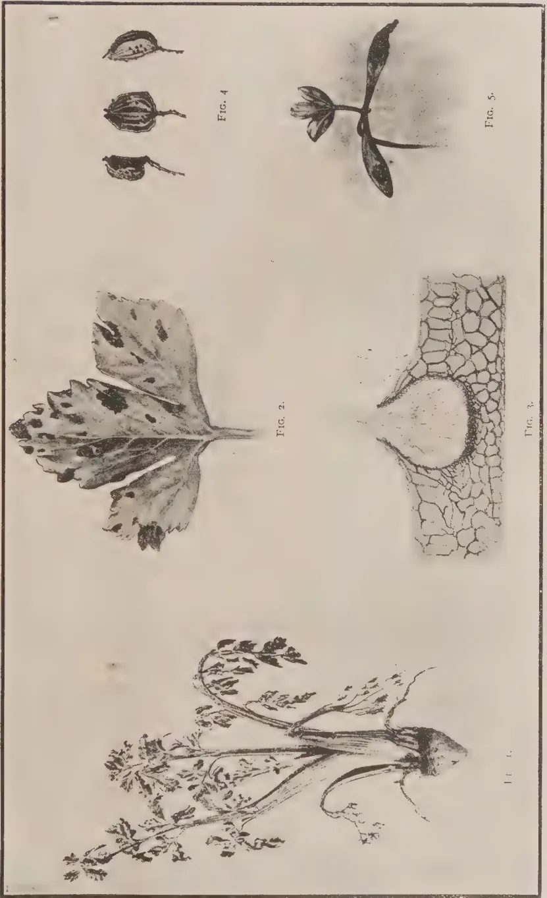
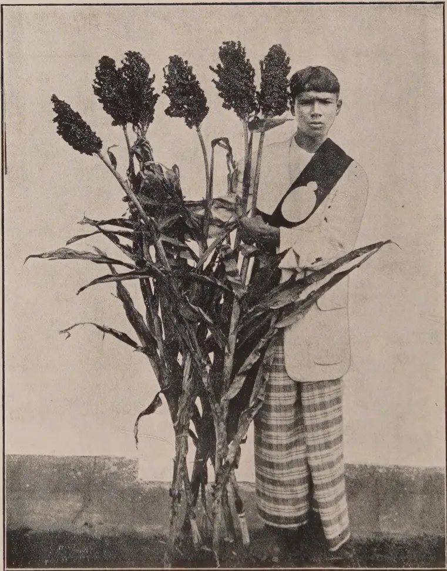

THE
TROPICAL AGRICULTURIST:
JOURNAL OF THE
CEYLON AGRICULTURAL SOCIETY.
VOL. XLIX.
PERADENIYA, AUGUST, 1917.
No. 2.
AGRICULTURAL INVESTIGATIONS.
The increasing demand throughout the colony for investigations into agricultural problems and into the manurial requirements of crops makes it desirable to review the necessary precautions in such investigations.
The soil itself is a complex problem and research within recent years has brought to light much information as to this complexity. The growth of a crop is not a simple process and the inter-relation of numerous factors have to be kept in view.
Any investigations into agricultural problems have to be carefully designed. The errors of experiment have to be eliminated as far as possible and made measurable. Errors are inevitable in experimental work and they may even vitiate any conclusions that could be drawn from the experiments if they are not suitably reduced. Errors in laboratory analyses and measurements can be reduced by careful work and may be ascertained with a fair degree of accuracy by duplicating or triplicating the experiment.
Field trials are always liable to large sources of error but sufficient evidence is now available from experiments to indicate how these errors can be reduced in the case of annual crops. For permanent products, such as tea, coconuts, cacao, and rubber, the position is not so simple. In addition to the irregularity in soils, the individuality of the trees has been shown to be a most important factor.
It is unwise to depend upon experiments that have not a sufficient number of control plots to form a basis for calculation, and all trials should be carefully duplicated so that field errors
58[AUGUST, 1917.may be calculated. Owing to individuality of trees and the periodicity of crops, it is often necessary to test the "natural" yields of the various plots before the experiments are begun.
This necessitates long waits before any results of value can be obtained but it has to be realized that results from agricultural experiments cannot be hurried. In varietal tests, it is not uncommon to find one variety give the largest yields during one season, but only inferior ones in succeeding years. Steady work for several years is necessary before any adequate expression of opinion can be given as to the value of any particular variety and this variety which has proved itself satisfactory for one district may subsequently be found to be entirely unsuited for another.
The establishment of experiment stations in different agricultural tracts is essential to any scheme for agricultural improvement, and without them progress can only be slow—being left as it is solely to chance. These stations must be designed to meet the requirements of the district in which they are established, and the experiments conducted thereon must be so designed as to answer some at least of the problems of that district.
When definite information has been acquired from these experiment stations it is possible to establish demonstration plots to bring the information and experience gained before the cultivator.
To establish these plots before data from definite experiments is obtainable is undesirable, for errors may be frequent and the value of the demonstration lost.
The whole question of the experimental error in field trials has received careful consideration in Europe within the past few years. It has been placed upon the agenda for the forthcoming meeting of the Board of Agriculture for India, when it is hoped to devise rules, suited to the conditions of India, for the conduct of agricultural experiments and investigations.
The importance of this consideration cannot be over-estimated for there are numbers of experiments conducted that can produce information of little or no real value. Had the necessary preliminary precautions to reduce errors or to establish sufficient controls been taken, errors would have been reduced or eliminated, and the results could have been depended upon with confidence.
AUGUST, 1917.]59The results of the vulcanisation tests carried out at the Imperial Institute in connection with the Ceylon Rubber Research Scheme are summarized in the IMPERIAL INSTITUTE BULLETIN VOL. XIV., No. 4, as follows:—
(1) Spontaneous coagulation of the latex usually yields rubber of good quality which cures quickly, but the method is scarcely suitable for practical use.
(2) Scrap rubber* from the trees has invariably given a low tensile strength after vulcanisation.
(3) Acetic acid is quite satisfactory as a coagulant, and, so far as the vulcanising and mechanical properties of the rubber are concerned, there would appear to be no advantage in using any other acid in place of it. Further, excess of acetic acid is less likely to adversely affect the rubber than excess of some acids, such as sulphuric acid.
(4) Plain unsmoked sheet rubber is usually of excellent quality, the vulcanised product having as a rule a tensile strength of 2,300 to 2,400 lb. per square inches. The rubber also vulcanises fairly rapidly, the average time under the conditions of the present series of tests being about 70 minutes.
(5) Crepe rubber invariably takes a much longer time to vulcanise (105 to 130 minutes) than the corresponding plain sheet from the same latex, and this effect is brought about even if the freshly coagulated rubber is only passed through the rough rollers four times. The mechanical properties of crepe rubber after vulcanisation are very frequently inferior to those of the corresponding plain sheet.
(6) The "over-working" of the freshly coagulated rubber in the preparation of crepe (up to 70 times through the rough rollers) has very little effect on the mechanical properties of the vulcanised rubber, and only slightly increases the time of vulcanisation compared with that of crepe made by passing through the rough rollers only 5 or 7 times.
(7) Thick crepe rubber, made of rolling together several pieces of thin crepe, does not differ from the latter in time of vulcanisation, and the
* This scrap was sent to the Imperial Institute without being washed or worked, crude impurities only being removed by hand.
60[AUGUST, 1917.]differences in tensile strength are not very marked or constant. Thick crepe, made by rolling out the coagulum to the required thickness, usually vulcanises in a shorter time than the corresponding thin crepe.
(8) Different methods of drying (air-drying at the ordinary temperature, drying in hot air, and in vacuo) have very little effect on the time of vulcanisation or the tensile strength of the rubber.
(9) The smoking of sheet rubber increases the time of vulcanisation very considerably, and in some cases appears to affect adversely the mechanical properties of the vulcanised product.
(10) The addition of an alkaline solution of creosote to the latex before coagulation does not affect in any way the properties of the dry sheet rubber.
(11) The Wickham and Byrne processes do not appear to offer any advantages so far as the mechanical properties of the vulcanised product are concerned.
(12) Pressing the dry rubber into block or rolling it up with or without tension has very little effect on the time of vulcanisation or on the mechanical properties.
(13) There is no marked difference in the time of vulcanisation or physical properties between the rubbers obtained by coagulating latex in two or three fractions.
(14) Rubber which is allowed to remain in a wet condition after coagulation (creosote having been added as a preservative) appears to have invariably a short time of vulcanisation, and to give very good mechanical results after vulcanisation. Such rubber loses some proteins on washing. In these cases the rapidity of vulcanisation appears to be related in some way to the moist condition of the rubber, and in some specimens the time of vulcanisation varies with the percentage of proteins, the sample containing the lowest amount of proteins vulcanising in the shortest time. It is, however, impossible at present to connect these facts definitely, as a sample of rubber prepared by evaporating the latex in vacuo, which contained a very large amount of proteins, also had a very short time of vulcanisation. Further work on this important point will be required, but if in the meantime a quick vulcanising rubber with good mechanical properties is desired by manufacturers it would appear that it could be obtained by pressing wet creosoted sheet into blocks of suitable size.
(15) It is not yet possible to suggest a method of obtaining rubber with a uniform rate of vulcanisation, as samples made under exactly similar conditions at different times vary considerably in this respect. The bulking of the product obtained over a considerable period would appear at present to be the only practicable way of approximating to this result, until further research has thrown more light on the fundamental conditions in rubber which influence rate of vulcanisation.
AUGUST, 1917.]61An interesting article, contributed by F. M. RILEY to the PLANTERS' CHRONICLE, explains the various tapping methods employed by planters in Malaysia. He enumerates the four now employed on European-managed estates as follows:—
The first mentioned (A) Basal V, is mostly employed on newly opening up, where a fairly large return per acre is desired.
(B) The one cut one quarter is chiefly employed on old trees, say 10 or 12 years old, where the preservation of the bark has become of vital importance.
Daily tapping recommended for one quarter cuts.
(C) Two cuts one quarter (same quarter) are used when the tapping in the past has not been so drastic and the conservation of the bark not of such vital importance. Generally on old trees, the cuts can be 2 feet to 2 feet 6 inches apart, according to size of the trees. Alternate day tapping is strongly advised for this system.
The one-third method considered best.
(D) This, the one-third method, is the last referred to, and is considered the most important of all. It is a comparatively new practice and has stood all tests well. Under this system the amount of bark consumed is 17 per cent. less than the Basal V, while the amount of latex differs only slightly, on some estates practically not at all, and on others not more than 10 per cent. less. The exception is on young trees, and this is an advantage, as the Basal V. for young trees is considered too severe a treatment, removing too much latex. It is possible that the one-third method may be adopted on the system of daily tapping, and come into general use both for old and young trees.
Great differences in estates are noted, especially in respect to soil, moisture, etc., and those exposed to the sea air are reported as not giving such good results as those located inland.
Regarding tapping knives it appears several kinds are in use and recommended, but the great art of good tapping is a sharp knife, and most coolies take two knives with them to the field, cutting half the job with one, and half with the other, the knives being resharpened at night by a professional, who gets about 50 cents per man per month, this being paid by the coolies.
This applies only to the Chinese, however, who are better paid than the Tamils. The latter sharpen their own knives. One of the duties of the assistant should be to test the coolies' knives at least 2 or 3 times weekly.
INDIA RUBBER WORLD, MAY 1, 1917.
62[AUGUST, 1917.The call to arms (in America) has come. Army and Navy are preparing for action. Men are of little avail without munitions and equipment, among which rubber in one form or another has become indispensable. Never until the present international conflict has this substance played such an important part. Its manifold applications in modern warfare were described in detail by many papers in volumes 51 and 52 of THE INDIA RUBBER WORLD, but the vital importance of the rubber industry in equipping the Army, Navy, Air Service and Red Cross, second only to arming and feeding the nation's fighting forces, warrants a summary of its many ramifications at this critical time in American affairs.
First, we may consider the requirements of any Army, prepared for conflict upon land. To-day is the day of the automobile, the motor-cycle and the motor truck; the first two for quick travel of individuals or small parties from point to point, and the last to replace mules to draw munition and commissary wagons and artillery. All these require tyres of rubber, a fact in itself by which is proven the almost absolute indispensability of rubber in the progress of armies. In this one use, the manufacture of tyres, rubber is to-day almost as important as food and ammunition, for on rubber tyres every other necessity is borne to the front.
Rubberized fabrics are in urgent demand. Waterproof covers for wagons, guns and gun carriages are needed in great quantities, while ground sheets, tent coverings, ponchos, and even accoutrements are made of coated fabrics. The manufacturer of sheeted cloth will find there are many uses in the army for his product, while new demands must constantly present themselves for this class of materials. The soldier must be provided with haversack, and fastenings for the same, and here rubber and fabric are taking the place of leather. This latter material, advancing in cost as it is diminishing in supply, is fast being replaced by rubber for the soling of boots and shoes, and the claim is made that the new fibre and rubber soles have advantages not only of longer wear, but of more flexibility, and a waterproof quality not possessed by leather. Trench warfare has made rubber boots necessary to prevent the serious illness that soldiers contract in these muddy ditches.
To-day fighting is done not only on the land, but in the air, on the water, and even beneath it, and aircraft, warships and submarines all require rubber in so many and varied forms that it would be but slight exaggeration to say that none of these could exist without the precious gum.
No substance has been found which can replace rubber in the manufacture of balloon fabrics. While the double fabric which forms the bags for dirigibles and "blimps" has not yet been made absolutely impervious to the passage of gases, no other material which has otherwise been considered practicable has approached it in this particular. The wheels are rubber tyred. The aviators wear rubber clothing, that they may conserve their bodily heat when in the colder and more rarefied atmosphere of high altitudes, and many of these suits are capable of acting as life preservers, if the aviator falls in the water.
Much rubber is also employed in the making of respirating apparatus, enabling the airman to breathe while at these great heights. That new invention, the stabilizer, requires rubber for insulation, packing and tubing, while every airplane uses tubing or solid rubber for cushioning the operator's body from shock, and for protecting exposed parts liable to damage in alighting.
AUGUST, 1917.]63The battleship has so many rubber requirements that only a general mention can be made. It is a habitation for many hundred men, and as such needs all the appointments of a modern hotel or dwelling, with its plumbing, its electric wiring, etc.; all the accessories of a machine shop, with its gaskets, its washers, its tubing; all the requisites of a fortress, its shock absorbers, its rubber carpeting; all the fittings of a hospital, of which more hereafter, and besides these all the essentials of a metal body floating in water, which must be watertight in all its joints, while its bulkheads must be packed as strongly as steam boilers to withstand pressure in emergencies, and of course, large amounts of hose are necessary.
Many, indeed, are the rubber requirements of ships that sail the seas, and even more numerous those of the fleet which sails below the ocean's surface. There, surrounded on all sides by water, with pressure increasing with every foot of submersion, the most exacting necessity is the packing of all joints, the use of gaskets and all hatches, around the inlets and outlets of the torpedo tubes, and the joints of the torpedoes themselves. There are many buffers for the doors and packings to make them waterproof. There must be packing around the periscope tubes, and around the lenses in hem and cushions to protect the observer's face from jars and bruises when using these necessary tubes. These submarines are usually propelled by electricity when submerged, and much rubber is used for insulation, to prevent leakage and short circuiting. Hundreds of hard-rubber battery jars must each have its tightly fitted rubber-sealed cover, and its enclosed rubber separators, while much sponge rubber is used in the elimination of gas and acid fumes from these batteries. The crews of some submarines are provided with life-saving suits of rubber to be used in the event of disability of the vessel to rise to the surface.
War consists primarily in the destruction of life, but a merciful adjunct to all branches of service is the hospital, be it in the field or on shipboard. The readers of this page are acquainted with many surgical sundries and appliances used in every hospital, which are made wholly or partly of hard or soft rubber. There is no need of their enumeration here. With our forces in action all such supplies will be needed in great quantities.
Rubber also plays an important part in the manufacture of modern high explosives. The chemicals used in their production require careful handling, the health, and often the lives of the operatives depend upon the rubber gloves, aprons and boots they wear. And if the materials are full of danger, how much more so the explosives, when manufactured, and here the requirements regarding metal-less footwear are compulsory.
In all these branches of service there are vicissitudes when resuscitation may be necessary. The airman may lose his breath because of rarefied atmosphere or swift descent; the soldier may be subjected to gas attacks, the sailor to drowning, the submarine sailor to noxious fumes, and all of them to sudden severe nervous shock, which may be fatal unless artificial respiration is quickly available. The many kinds of apparatus for such purposes are all more or less dependent on rubber for tubing, gas bags and inhalers. And here might also be mentioned the gas helmets and oxygen breathing apparatus furnished soldiers likely to be assaulted by gas attacks of the enemy.
This is far from being a complete list of the various forms in which rubber is required in modern warfare. Few, if any, industries are more important than our own in the present emergency. That the rubber manufacturers of this country are prepared to fill all these requirements is a source of satisfaction in this critical period of the nation's history.—INDIA RUBBER WORLD, May 1st, 1917.
64[AUGUST, 1917.S. TYAGARAJA,
Member of the Plant Pest Board, Trincomalee.
I recollect having read some time ago that ground-nuts were grown in Ceylon as a catch-crop in coconut and rubber plantations and the results were not satisfactory. However, I decided to give the cultivation a chance in this district and I am glad to say that the experiment proved a great success and I desire to communicate the results in the hope that the information may prove useful to other cultivators.
I opened out a new clearing for coconut plantation last year and selected a plot of two acres for the cultivation of ground-nuts. The soil is of sandy loam, friable. I put in 80 lbs. of shelled seed for the whole plot, commencing from the 10th of October. There was some damage caused by rats before the seeds germinated which took about seven days. By the end of February the leaves began to wither—a sign of the ripeness of the nuts. I proceeded to harvest the crop from the 10th of March exactly five months after sowing. I had a return of 5,800 lb. which realised at the local market Rs. 406/- at the rate of 7 cents a lb. The cost of the seeds and the labour involved in tilling, sowing and harvesting came to Rs. 121.30. Thus I had a net profit of Rs. 284.70, that is Rs. 142.35 per acre. Is this not extremely satisfactory? I only regret that I did not cultivate it on a larger scale for in that case I would have recouped my expenses of opening out the land for coconuts out of the profits given by this catch-crop.
The return would have been perhaps still more had not the crop suffered slightly from some insect pest that bored the stems and destroyed the plants.
I ought to have commenced harvesting a fortnight earlier, that is months after sowing. As I harvested late a large portion of the pods had separated themselves from the stems with the result that I had to put in more labour in tilling the ground in search of the separated nuts.
Even after the collection many nuts were still in the ground which germinated with the April rains and I expect to gather the nuts of this second crop by the end of July. The ground-nut seems to be such a hardy plant that even in the hot weather with a scanty rainfall I am in a position to reap a second crop which I did not expect to gather and which grew spontaneously. All that I did was to till the soil once again and make it loose. The yield
AUGUST, 1917.]65may not be so satisfactory as the first regular crop, but yet I expect a fairly good profit with practically no great expenses incurred. The soil in our district seems to me to be excellently suited for ground-nuts and my only fear in not venturing to cultivate it on a large commercial scale is that I will not find a ready market at the present time. But at any rate as a catch-crop among coconuts I commend it to all small landowners. The same profit may not be realised if the land is entirely devoted to the ground-nut alone for there is the question of securely fencing the land and watching the crop against the depredations of wild pigs and porcupines for fully five months. But to a coconut plantation such fencing and watching are incidental and such expenses may not be put to the account of those incurred for the raising of the ground-nuts.
The ground-nut being a leguminous plant will not exhaust the soil as other catch-crops may. Further there is the additional advantage in the soil being aerated by the process of tilling while sowing the ground-nuts and while gathering the crop. In such process weeds are kept down and a considerable saving is made in the weeding item by the coconut planter.
V. RAMANATHAN,
Agricultural Instructor, N.P.
Only the more advanced cultivators understand the advantages of rotation and adopt the following two systems on dry land.
Tobacco planted in January followed by Tenai (Setaria Italica) in May in the first year and chilli in the second year.
Methods. For the two crops system, the soil is hoed to about a foot deep after every spell of showers from July and manured by penning cattle. In the month of December green leaves collected from distant places costing over Rs. 10/- a cart load and Tephrosia purpurea plants, which are considered the best for smoking tobacco and costing about Rs. 30/- a cart load are brought and buried in the soil. After cattle manure is again applied, the soil is brought to a fine tilth and levelled.
In October the nursery bed is prepared by hoeing the soil repeatedly until it is reduced to a fine tilth and all stones, etc., are removed. Then well rotten farmyard manure is applied and mixed well with the soil and levelled. The seeds are then mixed with sand, in order to secure an equal distribution, and sown. Then the bed is stirred by the fingers and water is gently sprinkled and continued everyday until the seedlings are transplanted. A light shade is also provided.
66[AUGUST, 1917.Early in the month of January the holes are marked in the field and watered for transplanting. The seedlings are transplanted in the evening three feet apart. The plants are shaded with green leaves and watered every day until the seedlings show signs of vigorous growth. The soil is hoed and manured at intervals and watered every other day.
The harvesting commences about the latter part of April. Under normal conditions the yield will be 45,000 leaves per acre. About 15 days before the harvesting of tobacco, Tenai, which is to follow the tobacco crop, is sown on well prepared nursery. As soon as the Tobacco is harvested the land is ploughed about 4 times and the tenai seedlings, which will be about 25 days old, are transplanted and watered once in 4 or 5 days.
About the month of July this crop is harvested by picking the ears first and then the straw is cut and preserved for feeding cattle according to the demand.
The average yield of this crop is from 60 to 100 bushels per acre.
In the second year chilli (Capsicum annum) replaces tenai. The field and the nursery are prepared as for the tenai crop and the seedlings are transplanted at a distance of 2 to 3 feet apart and watered once in 3 days. The soil is hoed about 3 times.
The harvesting commences in October, the fruits being plucked as they ripen. They are then dried in the sun and used as dried chillies. About 10 cwt. is said to be the best yield for an acre.
Tobacco planted in January followed by samai (Panicum miliare) in May and kurukkan or chilli in August.
The soil receives the same treatment and tobacco is cultivated as in the two crops systems. Samai, which is to follow the tobacco, is sown in May at the rate of about 8 measures per acre. Cultivation is the same as for tenai and harvested in the month of July and thrashed. The straw of samai is also used for feeding cattle.
The yield is about 16 bushels per acre.
Kurukkan (Eleusine coracana) or chilli follows samai. If kurukkan is to follow, the seedlings are raised on nursery and transplanted in July. Cultivation and harvesting are the same as for tenai.
If chilli is to follow samai, the soil is prepared and the seedlings are transplanted in July in the same way as in the two crops system. This being a wet weather crop, much irrigation is not required.
This crop is used as green chilli and priced higher than the dried chilli, but the yield is poorer than the dry weather crop.
AUGUST, 1917.]67Minutes of a meeting of the Committee of Agricultural Experiments held at the Peradeniya Experiment Station on July 12, 1917.
Present:—The Director of Agriculture (Chairman); the Botanist and Mycologist; the acting Entomologist; the Superintendent, Botanic Gardens; the Superintendent, Low Country Products and School Gardens; the Government Chemist; the Chairman, Low Country Products Association; the HON'BLE the Rural Member of the Legislative Council; Messrs. A. W. BEVEN, J. S. PATERSON, A. S. LONG-PRICE, A. J. AUSTIN DICKSON, R. G. COOMBE, G. H. GOLLEDGE, and H. A. DEUTROM (acting Secretary); and as visitors, Messrs. H. L. DE MEI., A. B. GOMES, and H. F. TOMALIN.
2. The minutes of the last meeting having been confirmed, the Chairman announced that certain members were unable to attend as they were in camp.
3. Progress Reports:—The Chairman referred to two slight corrections in the Progress Report of the Peradeniya Experiment Station, as issued to members.
Referring to the Progress Report of the Dry Zone Experiment Station, the Chairman stated that the quality and the yield of chillies and onions were satisfactory: a sample of chillies was exhibited.
The HON'BLE MR. R. HUYSHÉ ELIOT stated that the pine-apples grown at the Dry Zone Station were large but without flavour, and enquired whether the latter fact was due to irrigation. The Chairman replied that irrigation had probably something to do with this.
The Chairman explained that Rs. 15/50 was the highest price received per 1,000 coconuts at the last sale by tender, and it was not accepted. After discussion it was decided to await the result of tenders called for a second time.
4. Shot-hole Borer.—The Chairman read a letter from Mr. D. S. CAMERON re shot-hole borer, and MR. SPEYER in commenting said:—
Tea Seed.—The late MR. RUTHERFORD recorded one case only of shot-hole borer entering seed when still on the tree in the green state. None of the beetles had been able to produce broods in this case. From observations of MR. WESTLAND on 150 maunds of seed, any danger of disseminating the insect was extremely remote. No specimens had been received in the Department from MR. CAMERON.
Camphor.—The species of Xyleborus—X. arquatus and X. compactus were recorded in camphor, of which the former might easily be mistaken for shot-hole of Tea. There is no reason, however, why X. fornicatus should not attack camphor to a slight extent near tea which is badly infested, but no specimens were to hand.
Mana-grass.—A specimen of Mana-grass with small holes in it was exhibited: these were made by a Hymenopterous insect having no relation or connection with shot-hole borer. Unless specimens are sent for thorough identification, it is not possible to place the occurrence of any insect in any plant on record.
68[AUGUST, 1917.Control Scheme.—With regard to the effect on the quality of tea produced in the factory occasioned by the plucking of bushes at different times after pruning, MR. SPEYER asked the Committee if the differences in the quality of leaf of say 20% of the bushes in a field for a short period would seriously endanger the quality as a whole.
MR. CAMERON stated in his letter that the bushes left unpruned in the alternate rows on 18 month fields would induce the borer to visit them more than before.
MR. SPEYER stated that this was the actual condition which was desired, so that the alternate rows should act as a trap for a period of a few months.
5. Removal of Tea Stumps.—The Chairman read copy of a resolution of the Plant Pests Board of Nuwara Eliya re the removal of tea stumps, and enquired what in the Committee's opinion was the general policy to be observed. After discussion it was decided to support the resolution of the Nuwara Eliya Pests Board and further to recommend that no sale of tea stumps or plants should be allowed without a permit from the Director of Agriculture after 1st January, 1918.
6. Eradication of Castor oil Plants.—The Chairman read a detailed account of the steps taken so far to enforce the eradication of the castor-oil plant from tea growing areas, and impressed upon all the importance of co-operation.
It was decided to publish the Chairman's note in the local press and the PLANTERS' GAZETTE, after re-editing.
MR. A. W. BEVEN stated that he had not observed any shot-hole borer on castor growing in the Chilaw District, but MR. A. S. LONG-PRICE had recently sent in to the Entomologist a specimen from the same district which was determined as shot-hole borer.
7. Fluted Scale.—MR. SPEYER read a list of estates affected with the Fluted Scale since the end of April last, and the Chairman explained that there is evidence that this pest is spreading. Steps were being taken in combating the pest, and Government had sanctioned engaging the services of one of the passed students of the School of Tropical Agriculture who will visit the various estates and take the necessary measures for its control. A supply of Lady-birds had been ordered from South Africa. It was stated that every precaution should be adopted and all should report to the Department immediately the pest is observed on their estates or lands.
8. Tea Tortrix.—The Chairman detailed the investigations carried out so far, and stated that the special Entomologist appointed was expected to have left England at the beginning of June.
MR. SPEYER exhibited some specimens of the insect.
9. Tobacco Experiments.—The Chairman stated that reports on the experiments had been circulated, and that White Burley was found to be the only suitable type of tobacco for the soil and climatic conditions of Jaffna. MR. SCHERFFIUS had left for America on the termination of his agreement. On the proposal of the HON'BLE MR. R. HUYSHÉ ELIOT seconded by MR. A. S. LONG-PRICE a vote of thanks to MR. SCHERFFIUS for his invaluable services in connection with tobacco cultivation was adopted.
AUGUST, 1917.]69The HON'BLE MR. R. HUYSHÉ ELIOT proposed that the experiments may be continued for 2 or 3 years more, provided a suitable man was appointed to succeed MR. SCHERFFIUS. MR. LONG-PRICE seconded the proposal, which was supported by MR. C. NAMASIVAYAM.
The Chairman announced that he was in communication with a planter of experience from America to carry on the work of tobacco experiments for another 2 years.
MR. BEVEN'S proposal to train up a local man to assist the Tobacco Planter was adopted.
10. Rubber.—Cutting off of Seed Pods to prevent Pod Disease. Report of trials.—It was stated that in a trial on the Experiment Station, Peradeniya, the pods, 180 in number, had been cut off one Hevea tree in 42 minutes. The tree was growing on the outside of the field and had a good head. The Mycologist stated that he had been informed that this work had been carried out over a given area on one estate at a cost of about Rs. 18/- per acre.
11. Bark Rot or black line Canker Treatment on Hevea brasiliensis.—In response to the HON'BLE MR. ELIOT the Mycologist stated that it was now recommended that 5% Brunolineum should be applied regularly after each tapping throughout the rainy season to prevent Bark Rot. This would necessitate an alteration of the present system of collecting scrap in the case of daily tapping. Experiments were in progress to determine the effect of various substances on renewing bark. At present it appeared that the effect of tar and tallow (5% tar, 95% tallow), 20 per cent. Brunolineum and 20 per cent. Carbolineum was negligible: tar alone penetrated further where the cork layer was cracked or the cut was fresh; while Brunolineum pure and Carbolineum pure penetrated the renewing cortex to a depth of 1.5 millimetres.
12. Jaffna Matting for Rubber Packing.—Samples received from the Maniagar of Jaffna were exhibited; the best quality brought from Jaffna by MR. BAMBER was considered suitable, but the second quality now received was not sufficiently strong. Requests were made by some members for mats for trial shipments, and steps are being taken to obtain a supply of the best quality for the purpose. The cost of the mats received was 15 cents each. If double mats are required this quality would probably answer for the inner one.
It was considered that the "eikels" sent for sewing up the packages were too brittle, and that coarse string as used for sewing hessian round chests was more suitable. It costs about Rs. 26/- per cwt.
13. Caffeine Manufacture.—MR. BAMBER stated that several experiments had been made on the extraction of caffeine from tea fluff with satisfactory results, and it was proposed to manufacture caffeine in Ceylon. He asked members to supply data of the yield of tea fluff, and red leaf, and the cost per lb. MR. DICKSON gave the amount of fluff as one per cent. and other members promised to send particulars.
H. A. DEUTROM,
Acting Secretary, Committee of
Agricultural Experiments.
From 1st May to 30th June, 1917.
The yields for the months of May and June has been 9,601 lb. green leaf from 11 acres. The April made Tea fetched in Colombo 41 cents per lb. for Broken Orange Pekoe, and an average of 32 cents for all grades; the May made tea fetched 43 cents per lb. for Broken Orange Pekoe, and an average of 34 cents for all grades.
2. The rate for manufacture of tea has been raised from 1st July to cents per lb., cent more than the previous rate. The enhanced rate is attributed to the increase in the price of chests.
3. Plots 141-144 have been pruned.
4. A good deal of shot-hole borer was found in plots 141 and 142, the bushes in the upper portion bordering the jungle being mostly affected.
5. The dadaps in plots 144 and 149 have been cut and mulched after an interval of 4 months, yielding 3,748 lb. and 3,600 lb. green mulch, respectively.
6. The banks along drains have been "backed."
7. The lower portion in plot 145 has been isolated from the remainder of the plot by digging a trench 2 ft. ft. round it. The old jungle stumps have been removed. This disease-affected area has been treated with a dressing of lime.
8. The plot of land, 2 acres in extent, next to the Manipuri plots has been cleared of jungle and is now being cleared of stumps.
9. Plots 83 A, B, 83 D, 84 A, C, D, 85 D, 86 A, B, C, were manured with the various mixtures applied last year. The manures were applied in a central trench, 6 inches deep and 2 feet wide, and were lightly forked in with leaves.
10. Plots 83-86 have had new drains dug between the manured plots to prevent the possibility of surface roots absorbing manure from adjoining plots.
11. The two acre plot planted in avenues, ft., has been limed and manured according to last year's scheme.
12. All T. candida on the Hill-side and Hill-top plantations has been uprooted. The stems were collected and burnt after the leaves had fallen. Most of the plants were affected with root disease.
13. T. candida in the Heneratgoda No. 2 plots on the flat has also been uprooted. The stems and leaves from a portion of this area were heaped up ft. and 4 feet deep with a layer of cattle manure between to assist fermentation.
14. The work of putting short contour walls on the Hill-side rubber plantation has been stopped pending a proper tracing now being undertaken with the aid of a Road Tracer, kindly lent by the Public Works Department.
AUGUST, 1917.]7115. The newly-cleared plot of rubber ( acres) has been planted out, 25 ft. 25 ft. on the diagonal, with one year old stumps from the Peradeniya Botanic Gardens trees, the first row being 12 feet away from the road.
16. All tapping surfaces were treated with a mixture of 95% tallow of tar and 5% of tar, before the commencement of the monsoon.
17. All dead branches of rubber trees in plots 78-82 have been cut out and burnt.
18. Tree No. 19 in plot 152, found to be affected with Fomes—was uprooted, all lateral branches being traced and removed. A trench 2 ft. 2 ft. was dug round the affected area, which was limed.
19. An experiment to determine the length of time a cooly takes to cut out young rubber pods has been tried; 180 pods from one tree were cut out in 42 minutes, a cacao-picker being used for the purpose.
20. One round of picking has taken place since the last meeting.
21. Blossoming has been remarkably heavy all round during the last two weeks, and the autumn crop is setting well.
22. Cacao which has not been sufficiently pruned will receive attention shortly.
23. A further round of removing suckers has been completed.
24. Series I and III (old cacao) and 4 acres of 9-year-old cacao "B," were manured according to the scheme laid down last year.
25. Plots 68-76 planted with various varieties of cacao have been supplied.
26. Gliricidia maculata cuttings have been planted out in the poor patch of "B" cacao and the Hill-side cacao to take the place of dadaps, which have frequently died out.
27. Several trees have been attacked by Red-weevil (Rhynchophora ferruginea). Holes were made in two trees by cutting open their stems, and after thoroughly scorching these, hot tar was applied. One tree on being cut open contained 3 red beetles and 143 larvæ.
28. The price realised for coconuts at the last sale by local tender on 15th May was Rs. 25/- per 1,000 good nuts.
29. 54 plants have been supplied in the 10 acre block, there being no more vacancies. Some of the supplies planted in June last year were destroyed by porcupine.
30. A nursery of 100 Likir nuts brought by Mr. BAMBER from Lower Perak have been planted out.
31. The coffee plants have been topped and pruned.
32. The dadap and Leucaena shade over the coffee has been lightened and mulched to the plants.
33. All vacancies of the various varieties have been supplied.
34. The Robusta coffee trees are bearing a heavy crop. Seed will be available for sale in September next.
72{AUGUST, 1917.35. 100 seed each of the following strains of coffee received from the Department of Agriculture, Java, have been planted out in bamboo pots :—
| Excelsa | ... | ... | No. 121 05 | Garden No. 126 |
| " | ... | ... | 121 08 | 126 |
| Liberia Pasir Pogor | ... | ... | 144 | |
| Abeocuta | ... | ... | ZZ | 116 |
| Laurentii | ... | ... | 3 01 | 92 |
| Uganda | ... | ... | 5 | 120 |
| Robusta | ... | ... | 83 | 242 |
| " | ... | ... | 105 | 217 |
| Quillon | ... | ... | 89 03 | 111 |
| Canephora Monosari | ... | ... | 1 03 | 73 |
36. Vanilla pods have been thinned out limiting each bunch to 8-10 pods.
37. Small plots of different curry stuff seeds received from the Secretary of the Ceylon Agricultural Society have been established.
38. Rooted cuttings of the 10 varieties of sweet-potatoes from Mauritius were planted early in June in rows 2 feet apart. The cuttings were set every 3 feet along the row. The growth is healthy and vigorous in spite of a spell of dry weather soon after planting. The sweet potato is deserving of more attention from agriculturists. The plant is easily grown, free from disease, and generally yields fair returns. Every part of the plant is useful for stock feeding.
39. The following new varieties of green manures were grown in the show plots opposite the office :—Sarawak Bean, Centrosuna plumieri, Trifolium resupinatum, and Leucaena glauca (Ipil-ipil) from the Philippines for purposes of comparison.
40. Quarter acre each of the following varieties of ground-nut, maize and dura were planted out in plots 19 and 20, seed being specially selected from the last crop. Spanish pea-nut, Virginia bunch, and Ceylon variety; red, variegated and common yellow maize; red dura.
41. A rice hulling machine sent by the Secretary of the Ceylon Agricultural Society has been tried with different varieties of paddy, and found after adjustment to be satisfactory. A demonstration of its working will shortly be given.
42. Work in connection with the erection of latrines for coolies has commenced, and the latrines will be put up shortly.
43. A villager in the act of plucking coconuts was arrested and produced before the Police Magistrate of Kandy, who sentenced the accused to a month's rigorous imprisonment.
44. 19 visitors, planters and otherwise, have been shown round the Station since the last report.
45. The present village labour turn-out is short, due largely to this being the ploughing season for the Maha crop.
| 46. Rainfall.—May | ... | 4'63 inches | ... | rainy days | ... | 3. | |
| June | ... | 10'79 | " | ... | " | ... | 14. |
H. A. DEUTROM,
Acting Manager, Experiment
Station, Peradeniya.
From 1st May 1917 to 30th June 1917.
1. The Acting Manager of the Peradeniya Experiment station has made two visits since the last report.
2. The plot set apart for paddy cultivation has been levelled by the removal of ant-hills and the filling up of the depressions. The land is being ploughed and disc-harrowed.
3. A four acre block of land which had a crop of Sudan Dura two years ago has been cleared of cheddy and is practically ready for planting Mauritius hemp.
4. Nine plots of 1/10th acre each in extent have been laid out and planted with different legumes.
5. Onions and chillies are being harvested. The results so far being as follows:—
(8) Remarks. The beds were irrigated once in 4 days. No manure was applied. The bulbs sown were of poor quality. It is proposed to try an experiment with onions from seed.
Chillies. Seed from Jaffna.
Acreage sown. 1/8th of an acre.
Date of sowing and planting. 20th January 1917.
Quantity sown. ½ lb. transplant.
Distance. 18 inches apart.
When harvested. 24th April 1917.
Yield to date. 83 lb. of dry chillies.
Remarks. Growth healthy and vigorous. No manure applied. A few plants were affected with fruit and root disease.
6. The construction of new roads, paths, channels and drains is in progress.
7. Fruits. Pine apples are fruiting well. The Kew variety weighing from 15-20 lb. each are readily sold on the spot, fetching good prices.
Papaws. Are fruiting well, and are in great demand.
Guavas. Are bearing fine large clusters of huge juicy fruit.
Melons. Have made very good growth and attained a large size.
8. A few plants of the African oil-palm (Elxæ guineensis) planted in November 1915 have come into flower.
9. The Robusta coffee plots under dadap and Gliricidia shade continue to make rapid and strong growth. The plants have blossomed twice during the year.
74[AUGUST, 1917.10. Coconuts. The general appearance of the trees planted on the unirrigable land is very favourable.
11. Cacao. The Forestero variety under dadap shade is doing well.
12. Tea is making moderately fair growth.
13. It is proposed to fell the jungle up to the railway line excepting that portion reserved as an Archaeological reservation. This area will be planted with limes and fibres.
Two plots of ground-nuts sown in January have been harvested 5 months from sowing. The following is the result.
| Bushels per acre. | Weight of 1 bushel. | |
|---|---|---|
| Spanish nuts | 37½ | 28 lb. |
| Virginia bunch | 87½ | 20 lb. |
52 visitors have been shown round the station since my last report.
H. A. DEUTROM,
Acting Manager,
Dry Zone Experiment Station, Anuradhapura.
From 1st May 1917 to 30th June 1917.
1. The second crop for the year 1917 was picked in May. The number of nuts collected was 8,315 from an area of 23½ acres composed of plot A 17 acres of 8½ year old palms, and plot B 6½ acres of 9½ years old palms (number of palms per acre 70).
2. In the irrigable area consisting of 1,224 palms 738 palms gave 7,819 nuts, an average of 10.59 per bearing palm. One tree in plot B gave 66 nuts at one picking.
3. In the unirrigable area consisting of 449 palms, 60 palms gave 496 nuts, an average of 8.26 per bearing palm. One tree in plot D gave 29 nuts at one picking.
4. The irrigable plots were flooded twice since my last report.
5. Plots A, B, C and E have been ploughed and disc-harrowed.
6. All young palms have been forked round and mulched with either coconut husks or cheddy after an application of wattle manure.
7. The mango and citrus trees have been pruned and irrigated.
8. Mimosa weed is being uprooted and burnt.
9. Irrigation channels have been cleaned and put in order.
10. The coolies have been thoroughly cleaned out and the compounds weeded and swept. The Medical Officer who pays weekly visits to the estate reports favourably on the health of the coolies.
11. The Acting Manager has made two visits to the station during the period under review,
H. A. DEUTROM,
Acting Manager, Experiment
Station, Mahailuppalama.
The last annual meeting of the Society was held at 12 noon on Tuesday, the 6th June, 1916, at the Council Chamber, Colombo, when His Excellency SIR JOHN ANDERSON presided. Quarterly meetings have since been held at Kurunegala on 3rd October, 1916 (MR. CUMBERLAND, Government Agent, in the chair), at Kandy on the 6th January, 1917, when His Excellency the GOVERNOR presided; and at Nuwara Eliya on April 10th, 1917 (MR. F. A. STOCKDALE, Director of Agriculture, in the chair).
The following papers were read at these meetings:—
Adjustment of Coconut Cultivation in Kurunegala District (T. B. L. MOONEMALLE).
Tobacco Cultivation (B. F. SCHERFFIUS).
System of Land Tenure in Ceylon: Past and Present (MUDALIYAR R. CHELVADURAI-PROCTOR).
History of the Co-operative Credit Movement in Ceylon (N. WICKREMARATNE).
Insect Pests (R. SENIOR-WHITE).
Improvement of Native Strains of Rice (H. L. VAN BUUREN).
A Note on Agri-Horticultural Shows (W. A. DE SILVA).
Cattle and Dairying (J. C. DRIEBERG).
The total number of members at date is 1,575 of whom 895 are local and 680 are foreign. The latter are made up as follows:—England (69), Scotland (7), Ireland (4), New Zealand (3), France (12), Siam (6), Italy (4), Burma (33), Java (41), Japan (25), Fiji (4), Belgium (2), India (139), F. M. S. (83), Portugal (3), China (2), Russia (2), Cochin China (5), Africa (50), America (26), Australia (35), East Indies (6), West Indies (30), Pacific Island and Hawaii (9), New Caledonia (1), Egypt (6), Bahamas (1), Gold Coast (12), Holland (7), Dutch East Indies (9), Philippine Islands (2), Solomon Islands (6), Mauritius (4), Seychelles (5), Borneo (17), Uganda (9), Cook Islands (1). The local members are distributed as follows:—Western Province (332), Central Province (253), Southern Province (78), Northern Province (38), North-Western Province (42), Province of Sabaragamuwa (19), Eastern Province (20), North-Central Province (56), Province of Uva (58).
The following members joined during the year:—
H. E. JENNINGS, EDWARD F. STONE, S. W. MOORHOUSE, RAO BAHADUR, Baroda; C. HERBERT DE MEL, The Bureau of Foreign and Domestic Commerce, H. S. STEVENS, General Rubber Co., Singapore, H. B. LARKINS, P. M. JOHN, The Rubber Plantation Investment Trust Ltd., South India; Officer in Charge, Natal Herbarium; Taivan Factory of Dainippon Sugar Coy., Ota, Japan; The Upolu Rubber and Cacao Estates Ltd.; JAMES BARBER, N. A. FERGUSON, JAMES AITCHISON, H. C. SCHOFIELD, H. LIONEL ELWELL, J. K. VAN DER MUELEN, Deputy Director of Agriculture, Scind; H. E. M. BUMPU, Department of External Affairs, Australia; C. V. BROOKE, STEPHENS & GREGORY, The Oriental Club, London; Padang Meiha Estate; THE MALAYAN TIN & RUBBER JOURNAL, WM. S. HOGG, C. A. SMITH, Singo Estate, Ltd., Kampala; J. STANLEY HARRIS, SIME, DARBEY & Co., Tawan Kuhara Estate, Borneo; E. ERRIDGE and H. E. KLINDWORTH, ALBERT E, EBERT, W. H. COX, Mitsuma
76[AUGUST, 1917.Chemical Laboratory, Japan; JNO. H. DE SARAM; P. S. DISSANAYAKE; FELIX DE SILVA; HEROD GUNARATNE; A. S. K. IYENGER, Kuala Pergau Rubber Plantations Ltd.; W. F. SENEVIRATNE, Reading Club "Orde," Java; MR. ARAI; G. F. BYLES; SANARIN KWA; ARTHUR DE SILVA; HOOFDKANTOOR H. A. P. M., AFDEELING; L. E. RUSSELL; DON RICHARD A. WIJEWARDENE; J. A. B. NOORBHAI & CO.; PERCY O. WIJYEKOOON, Secretary, Rubber Growers' Association, London; HON. MR. OSWALD TILLEKERATNE, Superintendent, Maskeliya Estate, Maskeliya; Passekudah Estate, E. P.; ARTHUR E. BYRDE, Manager, High Forest Estate, Kandapola; EDITOR AND MANAGER, Uganda Herald; J. W. WEERASOORIYA; Cornell University Library; Hawaii Agri. Experiment Station; General Laboratories U. S. Rubber Co.; Technical Department, Holland and American Plantation Co.; ALEC. CHALMERS; H. P. THOMASSET; WYTIE R. ANTHONISZ; Directeur van het Algemeen Profestation; G. W. WOODHOUSE, Agricultural Department, Apia; MRS. WALTER BURN, LAWRENCE DAWSON, J. R. LEE-BOOKER, R. CANDIAH; Administrator, Soengei Radja Estate, Sumatra; RICHARD A. FERNANDO; LIONEL-MARIE, Paris; E. RUSSELL COX; M. G. PERERA; K. KOJIMA, Singapore; University of California Library; U. S. RUBBER CO., New York; HON'BLE MR. N. H. M. ABDUL CADER; THE PANAGULA RUBBER CO., LTD.; CARGILLS, LTD.; RICHARD SALGADO; Selama-Dindings Rubber Estate, F. M. S.; Superintendent, Millawana Estate; C. F. DRAKE, CH. AARS, Java; Superintendent, New Valley Estate; F. E. PAULET; Superintendent, Gasnawa Estate; Superintendent, Madola Estate; P. CHAS. FERNANDO; P. GEO. DIAS; Superintendent, Beverley Estate, Deniyaya, D. J. WIMALA-SURENDERA, N. PORTER; A. GORDON HUNTLEY; B. T. HEATHCOTE.
MR. F. A. STOCKDALE, Director of Agriculture, assumed duties as Organising Vice-President on his arrival in December, 1916.
During the period under review the Board lost the following members through death:—MESSRS. JOHN CLOVIS DE SILVA, H. AMARASURIYA and MAHA-WALATENNE RATEMAHATMAYA.
The Finance Committee as reconstituted is now composed of the HON'BLE the COLONIAL SECRETARY, the HON'BLE the COLONIAL TREASURER, the DIRECTOR OF AGRICULTURE, the HON'BLE MR. K. BALASINGHAM and MR. A. J. R. DE SOYSA.
The heavy nature of the work of the office is indicated by the following statistical details:—
| 1915. | 1916. | |
|---|---|---|
| Letters received ... .. | 4,445 | 4,694 |
| Letters despatched ... .. | 4,358 | 4,733 |
| Endorsements ... .. | 588 | 775 |
| Memos, Reminders, etc. ... .. | 5,400 | 3,852 |
| English Magazines despatched ... .. | 20,472 | 19,651 |
| Sinhalese do do ... .. | 30,204 | 26,700 |
| Tamil do do .. .. | 1,560 | 1,764 |
| Acknowledgments and Receipts ... .. | 1,797 | 1,986 |
The Secretary was away on leave from 10th December, 1916, till 10th May, 1917, and during that time MR. KELWAY BAMBER acted. The latter desires to record the assistance rendered by the Chief Clerk during MR. DRIEBERG'S absence.
The Clerical staff now consists of MR. J. S. DE SILVA, Chief Clerk, MR. W. A. W. GUNAWARDENE, First Assistant Clerk and Interpreter, MR. A. C. MACK, Editor's Clerk, and the following filing, despatching and copying clerks: H. B. HALANGODA, C. A. SAMARASINGHE and J. H. RAJASUNDERA.
AUGUST, 1917.]77The following is a list of Agricultural Instructors with their headquarters:—
The annual statement of Revenue and Expenditure for the year 1916, as audited by MESSRS. FORD, RHODES & THORNTON is tabled. This will be the last audit by a private firm, as arrangements have been made, with the approval of Government, for the examination of the Society's accounts by the Colonial Auditor. The Society records its appreciation in the manner in which MESSRS. FORD, RHODES & THORNTON have audited the accounts for the past 10 years.
The estimates for 1917 as approved by the Finance Committee were submitted to the Board at the last meeting held at Nuwara Eliya.
Some of the work on paddy is referred under the head of Experimental and Demonstration Work.
The introduction of Heeneti paddy (selected seed) to Matara from the Kandy district has given satisfactory results. The Agricultural Instructor, Matara, reports that over 100 acres of this variety were cultivated last season, the yield being 20 fold whereas the Matara varieties average only between 10-15 fold.
Molagusamba paddy introduced from India is spreading and is now being cultivated in Peradeniya, Matale, Chilaw, Ambalangoda, Badulla, Hanguranketa and Katugastota.
The Rice swarming caterpillar (Spodophera mauritia) appeared in the cultivated fields in Rambukkana, Tammankaduwe and Kurunegala districts. Advice as to control measures were made available to cultivators through the Instructors.
The following varieties of paddy were cultivated on the fields attached to the Government Stock Garden, Peradeniya, viz., Senora, Mulang, Mucan Pina (Philippine varieties), and selected seed from the resulting crop were supplied to Bibile, Jaffna and Peradeniya.
With a view to raising a quantity of selected seed the fields attached to Irene Hostel were sown with Molagu Samba seed obtained from Madras, but the experiment was not successful.
Seed selection was carried out at Dunuwile, Uduwawela and Molegade, but continuous wet weather during February and March greatly interfered with the work. The cultivators were instructed in the method of seed selection.
Demonstration and Experimental Gardens are established at Bandaragama, Balangoda, Weragoda, Ambalantota, Kegalle, Hettipola and Mediwaka. Three others were started during the year at Taniuttu (Mullaitivu district), Sengaladi and Mahaoya, and the opening of 2 others at Weligama and Bibile are under consideration.
The value of these Gardens as centres of agricultural work and as a means of introducing the cultivation of particular crops has been proved in many cases.
78[AUGUST, 1917.i. Dhall (Cajanus indicus) at Udupiddi (Jaffna district) by A.I., N.P.
Object.—To introduce the crop and show method of cultivation.
Extent.—1/10 acre. Sown on 20th August, 1916. Harvested 1st April, 1917. Yield 66 lb.
Remarks.—Soil manured with 8 baskets of cattle manure.
ii. Hingurala (Dioscorea sp.) at Balangoda by Agricultural Instructor.
Object.—To introduce the crop and show method of cultivation.
Extent cultivated.—10 beds each sq. feet.
Yams planted.—21st March, 1916. Crop raised 9th December, 1916. Yield 200 lb.
Remarks.—Soil manured with cart load of cattle manure.
iii. Sorghum (Sorghum vulgare) at Ambalantota by Agricultural Instructor.
Object.—To introduce the crop and show method of cultivation.
Extent.—1 acre. Sown on 11th November, 1916. Harvested 15th February and 15th March, 1917. Yield 8 bushels.
iv. Paddy at Udispattu by Agricultural Instructor, Katugastota.
Object.—To show the advantage of transplanting.
Extent.—1 acre planted with seedlings. 4 plants per hole . Yield 35 bushels.
Remarks.—Crop damaged by excessive rains. Yield of other crops grown locally 30 bushels.
v. Paddy at Meetiyagoda by Agricultural Instructor, Galle.
Object.—To show benefits of manuring.
Extent.—1 acre. Sown broadcast 9th April, 1916. Harvested 21st August, 1916. Yield 67 bushels.
Remarks.—Manure with cwt. of a mixture composed of cattle manure 1 part, bone dust and carbonate of lime 1. Previous yields in this district averaged 31 bushels.
vi. Coriander (Coriandrum sativum) at Ambalantota by A.I., Matara.
Object.—To introduce crop.
Extent.—1/10 acre. Sown on 15th November, 1916. Harvested 9th March, 1917. Yield 7 lb.
Remarks.—A very small yield compared with Indian average of 350 lb. per acre.
vii. Paddy at Karthadi (Jaffna district) by Agricultural Instructor, N.P.
Object.—To test a variety (Dodki) suitable for saline land.
Extent.— acre. Sown broadcast on 20th September, 1916. Harvested 5th February, 1917. Yield bushel.
Remarks.—The germination of the seed was very poor. 3 cart loads of cattle manure were applied.
viii. Tobacco at Ambalantota by Agricultural Instructor, Matara.
Object.—To introduce the crop into the locality.
Extent.— acre. Seed put in nursery 24th August and 2nd September 1916. Transplanted 21st October and 22nd November, 1916. Harvested 1st February and 5th March, 1917. Yield 300 lb. or 240 lb. per acre.
Remarks.—8 cart loads cattle manure used.
ix. Paddy at Dedduwa by Agricultural Instructor, Galle.
Object.—To try Burmese water-resisting variety.
Extent.—1/32 of an acre. Sown 13th April, 1916. Crop submerged 3rd to 10th May, 27th to 30th June, 5th to 11th July. Harvested 28th September, 1916. Yield 16 measures equivalent to 16 bushels per acre.
Remarks.—This is the only variety that resisted the floods.
x. Paddy at Galagedera (Kandy) by Agricultural Instructor, Katugastota.
AUGUST, 1917.]79Object.—To show that ordinary seed rate could be reduced without detriment.
Extent.—1 acre was sown broadcast with 1 bushel seed ( usual quantity) and yielded 34 bushels.
xi. Paddy at Mannar by Agricultural Instructor, Northern Province.
Object.—To try a change of seed.
Extent.— acre. Sown broadcast with Molikaruppum paddy (Jaffna variety), 3rd November, 1916. Harvested 27th February, 1917. Yield 4 bus.
Remarks.—Manured with one cart load cattle manure. The yield was better than that obtained from local varieties.
The following tabular statement (not previously published) relative to the manuring of onions has been received from MR. R. SENIOR-WHITE, who has conducted a number of useful experiments for the Society :—
| Plot. | Manure. | N. | P2O5. | Cost. | Yield lb. | Increase of Control. | Value Increase. | Nett Gain. |
|---|---|---|---|---|---|---|---|---|
| A. | Amon. Sulphate 10 lb. ... | 2.00 | — | 1.58 | 15 | 3 | 0.75 | — |
| B. | Nitrolim 11 lb. ... | 1.98 | — | 1.42 | 3 | — | — | — |
| C. | Sod. Nitrate 13 lb. ... | 1.95 | — | 1.88 | 3 | — | — | — |
| D. | Basic Slag 11 lb. ... | — | 1.98 | 0.49 | 17 | 5 | 1.05 | 0.56 |
| E. | Superphosphate 11 lb. ... | — | 1.98 | 0.56 | 22 | 10 | 2.15 | 1.59 |
| F. | Fish Guano 25 lb. ... | 2.00 | 2.00 | 2.24 | 8 | — | — | — |
| G. | Blood Meal 14 St. Bone Meal 9 lb. ... | 2.02 | 1.98 | 2.36 | 3 | — | — | — |
| H. | Nitrolim 11 lb., Basic Slag 11 lb. ... | 1.98 | 1.98 | 1.91 | 1 | — | — | — |
| I. | Amon. Suph. 10 lb., Superphos 11 lb. ... | 2.00 | 1.98 | 2.14 | — | — | — | |
| J. | Sod. Nitrate 13 lb., Superphos 11 lb. ... | 1.95 | 1.98 | 2.36 | 10 | — | — | — |
| K. | Sul. Amon (15%), G. N. Cake (15%), Superphos (31%), St. Bone Meal (31%) Soda Nitrate 17%), Weight applied 5 lb. ... | 0.31 | 0.62 | 0.38 | 35 | 23 | 4.75 | 4.37 |
| L. | Cattle Manure not weighed | ? | ? | ? | 40 | 28 | 5.75 | ? |
| M. | Controls. Average of 4 plots | — | — | — | 11 | — | — | — |
With the exception of plots D. E. K. L. the quantity applied, which was greatly exaggerated for experimental purposes, was too great, and resulted in physiological derangements of the plants, with partial or complete failure.
Plot B gave the largest individual fruit, weighing cleaned lb.
All plots of approximately the same size.
Value at 20 cents per lb. (Kandy retail price).
Cambodia cotton experiment by MR. R. SENIOR-WHITE.—Three plots A. B and C. were planted on 2nd November 1916—3 seeds per hole 3 ft. 3 ft.
Plot A and B. were sown with Crotalaria striata on 15th August 1916 and were forked under with lime on 20th October 1916.
Plot C was treated with stalks and refuse on 23rd October from a Russian sunflower experiment and lime was applied simultaneously.
Germination of cotton was very poor possibly owing to the green manure being insufficiently rotted.
By 25th December the superior growth on plot C could be seen. On 26th December plot B was treated with 5 lb. of artificial manure.
Flowering commenced at the end of January 1917. First picking was done in mid-April and crop was taken out on 18th May when few pods were still unripe. The unseasonable rains of February and March threw the plants into growth and lengthened the time to harvest.
80[AUGUST, 1917.Yield. Plot A 340 pods, B 280 pods, C 390 pods, i.e. at the rate of 828 lb. clean cotton per acre—hand ginning giving 44.90% of lint.
In plot C one plant grew to a height of 7 ft. 6 in. and yielded 117 pods. Seeds from this are preserved for planting again.
Shortly after the outbreak of the war the Society made a very extensive free distribution of seeds. The Instructors and special officers from the Department of Agriculture travelled through villages enquiring into the local conditions as regards food supply and seed requirements. On their recommendation as well as on the application of Revenue Officers 13,321 packets of seeds, 6,100 cassava cuttings, 6 maunds potatos, 6 cwt. sweet potato cuttings, 200 lb. yams and 600 lb. of Dura were distributed among 402 applicants to 340 different centres throughout the country. As a result of this distribution, the supply of vegetables was well maintained through the ensuing year. Since then the Instructors have made it a special point, when travelling in their districts, to impress on the people the importance of utilising their lands for raising food crops, and whenever a shortage of seed was found the fact was reported and supplies issued. With the reorganisation of the Seed Store, which is now under the direct control of the Senior Agricultural Instructor, a large stock of seed is always kept on hand. Between June 1916 and July 1917, 3,938 packets of vegetable seeds were supplied to members, in addition to meeting the demands of 380 School Gardens. During the period June 1915—June 1916 7,400 packets of seeds were issued.
Owing to the threatened shortage of "Curry stuffs" (i.e. Bazaar grains, pulses and condiments) for which the Island is almost entirely dependent upon Southern India, the Society took steps to give every facility to local cultivators to raise their own supplies. A large stock of seeds was secured from India through the courtesy of the Department of Agriculture, Madras, and distributed to all parts of the Island. The following have been distributed.
Varieties of seeds and number of packets distributed:—Anise (Pimpinella Anisum) 61, Coriander (Coriandrum sativum) 185, Cumin (Cuminum Cyminum) 185, Bengal Gram (Cicer arietum) 85, Green and black gram (Phaseolus radiatus) 331, Dhall (Cajanus indicus) 213, Onion (Allium Cepa) 69, Onion (shallot) 88 lb. bulbs, Lentil (Lens esculenta) 97, Fenugreek (Trigonella Fœnum-græcum) Uluhal Sin. 97, Mustard (Brassica juncea) 95, Chili (Capsicum frutescens) 247.
The following is a list of members of the Society to whom seeds were supplied:—MUDALIYAR A. E. RAJAPAKSE (Negombo), MR. R. SENIOR-WHITE (Matale), THE HON'BLE DR. H. M. FERNANDO (Colombo), MR. P. B. M. BANDARANAYAKE (Mahaoya), MR. F. L. DANIEL (Colombo), MR. W. A. DE SILVA (Colombo), MR. A. M. C. DIAS (Panadura), MR. H. L. DE MEL (Colombo), THE HON'BLE MR. MEEDENIYA (Ruanwella), MR. R. CHELVADURAI-PROCTOR (Chilaw), THE HON'BLE MR. O. C. TILLEKERATNE (Matale), MESSRS. D. J. ARSECULERATNE (Colombo), DAN JOSEPH (Matale), C. D. A. GUNAWARDENE (Baddegama), DUNUWILE DISSAVE (Katugastota), M. KELWAY BAMBER, (Peradeniya), K. BANDARA-BEDDEWELA (Walapane), HON'BLE MR. T. B. L. MOONEMALE (Kurunegala), the Agricultural Instructors (Kandy, Katugastota, Ratnapura, Jaffna, Matale, Galle, Kalutara, Batticaloa). The following non-members have also been supplied, viz. MESSRS. A. RAMBUKOTA (Badulla), WILLIE BIBILE (Bibile) R. B. TENNE (Matale), L. B. TENNEKOON (Rambukana), Moses DE SILVA (Vavuniya), L. B. HINDAGALA (Peradeniya), M. KUMARA-NAYAR (Katugastota), A. C. W. JAYAWARDENA (Chilaw).
(The addresses give some idea of the extent of the distribution, but in many cases the seeds received by estate owners were despatched to different districts.)
AUGUST, 1917.]81The following school gardens have been supplied mainly with a view to ascertaining the suitability of the crops to different localities:—Madawele, Ankumbura, Gunnepana, Udispattu, Urugala, Buluwela, Anamaduwa, Nikaweratiya, Weuda, Gokerella, Wekada. Walapitiya, Poramadulla, Eraur, Irak-kulam, Addalachchenai, Samanturai, Ambana, Katuwana, Beralapanatara, Horadugoda, Keembiya, Opat, Tissamaharama, Aparekka, Konwewa, Mahaelgomuwa. Mahadiulwewa, Topawewa, Ratmalagahawewa, Iratperiyakulam, Migahakiula, Pålugama, Tennepanguwa, Welimada, Siyambala-anduwa, Haputale, Wangiyakumbura, Lunugala, Yatiganhulaha, Batagolla, Pussella, Morape, Kitulgala, Mawanella, Pallekanda, Godakawela, Illukkumbara, Madawala, Tiripeke, Kotapola, Hunumulla, Galagama, Hatella, Warakagoda, Kesbewa, Bellana, Kumbaloluwa, Halwala, Uduwara, Bope, Mediwaka.
The following Co-operative Credit Societies have been supplied:—Kandaboda Pattu; Weligam Korale; Unanwitiya; Wellaboda Pattu; Kalapaluwawa; Dakuna Talangamuwa; Handapangoda; Udugaha-Meda-Depathuwa; Makulla; Medagama; Pandatrippu; Udupiddi; Karaveddi; Walapane: Minuwangoda; Mahagama; Maha Pattu North; Galapatha; Adikari Pattu; Haltota; Matugama; Panadura-Talpiti-Badda; Hinidum Pattu; Akmimana; Hiriyal-Hat-Pattu and Puttalam.
A section in each of the Society's Gardens has been devoted to the raising of curry stuffs; and where no gardens exist the Instructors are working their own plots.
Part of the Teldeniya Resthouse premises is being used for the same purpose with the sanction of the P.R.C.
In Harispattu Mr. MOLEGODE has opened a large garden in Dunuwile where he is growing all the varieties of seeds referred to as well as pulse crops, ginger, turmeric, onions, garlic, chillies, etc. as an example to the villagers who are being encouraged by the offer of prizes for the best gardens.
Through the U.S.A. Department of Agriculture a consignment of Tepary Beans was obtained from Arizona and distributed in the dry districts, for which they were specially recommended.
50 grafted plants of Persimon (Diospyros kaki) were obtained from the Yokohama Nursery Company and distributed among the following:—MR. C. B. NELSON, MR. A. J. JAINU DEEN, Manager, Experiment Station, Peradeniya; Director of Agriculture, MR. J. S. DE SILVA, SIR SOLOMON DIAS BANDARANAIKE, MR. JOHN TILLY, MR. H. M. DRUMMOND HAY, DR. P. M. MUTTUKUMARU, MR. C. A. LA BROOY, MR. G. E. CRABBE, MR. J. AIYADURAI, Hakgala Botanic Gardens, MR. J. H. WYNELL-MAYOW and MR. K. BANDARA-BEDDEWELA.
In a Report by the Director of the Philippine Department of Agriculture mention was made of the experimental work done on Dioscoreas and Colocasias. It had been recorded that with the ample use of water and fertilisers certain colocasias could be made to produce a crop of 120 metric tons (48 tons 11 cwt. 1 qr.) per hectare (2.5 acres)—a yield which no other crop was known to have produced before. As it was pointed out that similar work on yams and tanias was been carried on in Java, an application was made to Buitenzorg for propagating material which was procured through the kindness of the Director of that Station. It consisted of 3 varieties of Dioscorea and 20 of Colocasias. These are being raised at the Government Stock Garden, Peradeniya, and it should be possible to distribute these varieties during the coming year.
Three varieties of Castor seed, viz., Kyankse, Madras and Java were obtained from the Superintendent, Honawli Agricultural Station, Burma, and have been distributed for trial at the following centres:—Anuradhapura,
82[AUGUST, 1917.Jaffna, Batticaloa, Mullaitivu, Mannar and Hettipola. These varieties have given good results in Burma, especially Kyankse, which gave a yield of 1,200 lb. seed per acre.
At the request of the Deputy Commissioner of Port Blair a collection of the local varieties of Dioscorea were supplied to him through the Manager, C.A.S. Seed Store.
At the request of the U.S.A. Department of Agriculture, the Society forwarded with the kind assistance of MUDALIYAR A. E. RAJAPAKSE, a collection of seed coconuts of the principal varieties found in Ceylon.
At the request of MR. D. FAIRCHILD, Agricultural Explorer, U.S.A. Department of Agriculture, cuttings of what is locally known as the "Rupee Mango" were despatched through the American Consul for the purpose of budding on American stocks.
Small lots of Swarnavari and Sadaisamba paddies were received from the Deputy Director of Agriculture, IV Circle, Madras, for trial.
An interim report on Datura plants has been received from the Director of the Imperial Institute. Two varieties, viz., Datura alba (white flowered) and Datura fastuosa (purple flowered) were submitted, and the Director remarks that as it seems possible that these Datura plants may prove to be a suitable source of the alkaloid scopolamine, for which there is a considerable demand in medicine, it is desirable that a further supply of about 7 lb. of each plant should be forwarded to the Imperial Institute for a preliminary technical trial. The samples forwarded should include a fair quantity of the leaves, stems and fruits, so that the relative values of each part of the plant as a source of alkaloid may be determined.
The Imperial Institute also desires to know what quantities of each plant are likely to be available if a demand can be created for this material.
Further samples of both varieties have been forwarded.
Margosa preparation.—A 'wine' prepared from the bark of the Margosa tree was also submitted to the Imperial Institute for a report and the following letter has been received:—"With further reference to your letter No. 4519 of the 4th December last referring to Margosa wine, I have to say that this material can contain only a minute amount of whatever active substances may be present in the bark, and is therefore not suitable for investigation. In this connection it may be mentioned that Margosa bark was included in the Indian and Colonial Addendum to the British Pharmacopœia in 1898, but on the revision of the Pharmacopœia in 1914, was rejected as not having stood the test of experience. In view of this authoritative medical decision it does not seem worth while to investigate Margosa bark or any of its preparations." It may be mentioned that the bark is held in high repute as a blood purifier by Ceylonese Ayurvedic Physicians and is largely employed by them.
Kapok Waste.—With regard to the particulars published in the last Progress Report (April 10th), the following further information has been received from the Director of the Imperial Institute:—"With reference to your letter No. 1266 of the 18th April, on the subject of the utilisation of kapok as a paper-making material, I have read the remarks by MR. A. B. THOMSON forwarded with your letter. It is quite true as MR. THOMSON states that the paper made on small scale from this waste at the Imperial Institute could be used for wrapping purposes, but the paper is of very poor quality and it would be just as expensive to make a good quality paper from better materials, of which there must be many available in Ceylon which would cost no more delivered at a mill than kapok waste. In this connection it must be borne in mind that to make pulp or paper at a profit, the industry must be undertaken on a fairly large scale, and that to cover the cost of
AUGUST, 1917.]83labour, interest on capital, depreciation of plant and chemicals, the cost of which would be high in Ceylon, a fairly good price must be obtained for the pulp and paper produced. These conditions would make it essential to use a good raw material as the basis of the industry. If it is proposed to consider seriously the establishment of paper and pulp manufacture in Ceylon, the Imperial Institute will be glad to make suggestions as to suitable raw materials available in Ceylon which might be sent to the Institute for trial."
A consignment of mangos was ordered from MESSRS. ABDUL RAHIMAN Sahib, the well-known Nurserymen of Salem, for purposes of identification and examination as to quality. These came carefully packed and were received in good condition. Coloured drawings (which are laid on the table) were made by the Draughtsmen of the Agricultural Department, and some interesting notes recorded by MR. H. L. VAN BUUREN of the School of Tropical Agriculture.
1. Thothapuri.—This should be compared with mangos coming under PROF. ROLF'S Sandersha group. Fruit is characteristically elongated to a point at both ends—right shoulder prominently higher than the left which is flattened and falls away abruptly. Basal cavity on left shoulder; beak prominent cms. from the apex. Apex-flattened, sinus broadly flattened out, skin salmon-pink to pinkish yellow on the shoulders gradually changing to a light green at the apex. Dots numerous.
Measurements:—17.5 by 10 by 9.5. cms.
The flesh is firm and closely attached to the skin. Lemon yellow in colour darker towards the middle. Delicately flavoured with a sub-acid taste.
Fibres fine and silky.
2. Dilpassand.—In many respects very similar to Thothapuri. The shoulders are very much more symmetrically rounded and thus approach mangoes that might come under PROF. ROLF'S pineapple group. The fruit ripens to a lemon yellow colour.
Measurements:—13 by 8.5 by 7.0 cms.
Skin thicker and flesh darker than last. Not so delicately flavoured.
3. Alphonso.—Left shoulder prominent and higher than the right; beak missing: apex rounded: dots minute: fruit ripens to a yellow colour with the exposed shoulder of a suffused red.
Measurements:—9.5 by 7 by 6.5 cms.
Easily the best of the mangos in taste; very luscious and well flavoured. Pulp reddish in colour. A good keeping fruit.
4. Gundoo.—Belongs to the same class as Alphonso; differences very slight: the red colour on one shoulder not developed: fruit ripens yellow with blotches of green distributed unequally.
Measurements:—9 by 7 by 6.5 cms.
Taste same as in Alphonso though the flavour is not so rich. Pulp is not so reddish.
5. Koothathath (Long).—This is the long variety of this class; both shoulders fall away equally, basal cavity slight, beak slight 1 cm. from the apex which is broadly rounded, sinus very slightly developed, dots large and far apart: skin a green colour with an ashy bloom gradually yellowing on ripening.
Measurements:—13 by 11 by 9 cms.
The flesh is light in colour, good in taste and flavour.
6. Bangoolora.—Very similar to Koothathath: the basal cavity is better developed, both shoulders are tinged red at the extremities only, the fruit ripens to an orange-yellow with blotches of green, dots are not so prominent as in Koothathath.
84[AUGUST, 1917.Measurements:—13 by 10 by 8.5 cms.
Flesh reddish and sweet taste and good flavour.
7. Neelam.—A small fruit: kidney shaped: left shoulder higher than the right; basal cavity slight, beak prominently lobed with a prominently broad sinus, apex rounded, ripens to a yellowish-green and orange colour; dots small, light yellow.
Measurements not taken. A small sized fruit resembling the common mango of the Jaffna peninsula in appearance.
Taste and flavour fairly good.
8. Peter Passand.—Left shoulder slightly higher than the right, both falling away equally: basal cavity slight, beak small, 2 cms. from a rounded apex; fruit is scarlet on one side, ripens to green and yellow: dots minute.
Measurements:—9.5 by 8 by 7 cms.
Skin separates easily from pulp. Excellent taste and flavour.
9. Nadusalai.—Similar to Peter Passand.
Beak is slightly more prominent, 2½ cms. from apex. Skin is tinged with red on one side.
Measurements:—Same as above.
Taste and flavour similar to last.
10. Mulgova.—Left shoulder equal to the right shoulder with a basal cavity well developed: beak missing, apex broadly rounded, sinus divided by a prominent groove which runs up the fruit longitudinally; fruit inclined to be round and warty—greyish-green with yellowish-green dots turning yellow on ripening.
Measurements:—11 by 10 by 9.5 cms.
Taste and flavour excellent.
The Alphonso, Gundoo, Bangaloora, and Mulgova varieties are considered to be worthy of introduction by growers of mangos in the colony.
The School of Tropical Agriculture has closed its first year and it has demonstrated the fact that the course was too short. The new set of students are required to go through a 2 years' course. A special short course for headmen has also been provided.
The development of the educational side of the School Gardens has engaged the attention of the Director of Agriculture and Director of Education, and it is likely that village boys will derive further and fuller advantages from these gardens which have already become a feature of the social life of the village and exerted a marked influence on the training of children. Not so many years ago village schools were characterised by a hard and uninviting aspect and were looked upon more or less as rural reformatories. The present conception of the school is very different and it is in most cases a place which the children are proud and fond of—a circumstance due as much to more up-to-date methods of teaching now in vogue as to the interesting and attractive setting of the school building.
19,651 copies of the TROPICAL AGRICULTURIST were issued during the year, the reading matter of the 12 monthly numbers covering 806 pages.
The Sinhalese Magazine—THE GOVIKAM SANGARAWA—reaches practically every school master and village headman, as well as a large number of Sinhalese land owners. 2,300 copies are issued monthly. Being the only vernacular Agricultural Journal, the Sinhalese reading public find great interest in it. The present is the 13th volume.
In December last the Society issued its 3rd Year Book, which is an enlarged and considerably-improved edition of previous publications. It has been reviewed in very complimentary terms. A Sinhalese edition is in course of preparation and will be issued shortly.
AUGUST, 1917.]85The following leaflets were issued during the year, viz., "The Selection and Storing of Seed Paddy" and "The Cultivation of Ginger."
MR. MOLEGODE is engaged in the compilation of a booklet dealing with the cultivation of "Curry Stuffs" which the Society will issue as one of its publications at an early date.
The Nuwera Eliya Agri-Horticultural Exhibition was held on the 9th and 10th April, 1917.
A Show was to have been held at Teldeniya this year but owing to the existing conditions it has been postponed. It is unlikely that there will be another All-Island Show for some time; but the proposal to revive small village shows, made at the Nuwara Eliya meeting, is under consideration. The Koralé Shows organised by MR. PLANT as Assistant Government Agent of Kalutara did immense good for the district during the three years they were held.
The revision of the rules and regulations governing shows held under the Society's auspices is in the hands of a Committee.
The Society's stud bull after a term at Jaffna, Mahaoya (Bintenne), and Kalmunai, has been moved to Anuradhapura.
This animal has proved to be of too large a type for the local animals and the Society has now under consideration the acquisition of several selected native bulls such as are to be found in Panadura and other places.
The influence of the Scind Breed introduced through the Government Dairy is now very marked in the coconut areas: while upcountry the influence of the English breeds kept on estates is becoming gradually noticeable.
A consignment of brood lac was received from India in September but owing to the length of time occupied in transit, the insects were found to have already emerged on arrival. Attempts at inoculations made at Kandy, Jaffna and Tangalle were as a result not successful. A fresh consignment was received in January when again the insects had emerged; but as inoculation was done immediately a fairly good crop of brood has been secured from Teldeniya.
The short supply of lac in the market has made it necessary to look for substitutes. A combination of the woodoil from Dipterocarpus glandulosus and the resin of Valeria indica makes an excellent lacquer. Specimens of articles brought by the Secretary from the Arts and Crafts Museum, Bangalore, are placed on the table for inspection. They ought to suggest further possibilities to the Ceylon worker in lac.
The movement has continued to progress. The Registrar of Co-operative Credit Societies visited a number of Societies in all parts of the Island and audited their accounts and also took the opportunity of attending annual General Meetings. The following 7 Societies have been registered since last report, viz.:—Unanwitya, Panadura, Talpitti Badda, Buttala, Matugama, Ittapana, Meegama and Welipenna bringing the total number of registered Societies to 76. Several backward Societies have been revived and begun to transact business. The Co-operative supply of manure for paddy, vegetables and other crops is being continued. Twelve Societies received 470 packets of vegetable seeds from the Ceylon Agricultural Society at a reduced rate of 10 cents per packet for distribution to members for growing during S.W. monsoon. One Society received a loan of Rs. 1,000/- from Government.
C. DRIEBERG,
Secretary C. A. S.
Peradeniya, 4th August, 1917.
86[AUGUST, 1917.| RECEIPTS. | Rs. | Cts. | Rs. | Cts. |
|---|---|---|---|---|
| TO MEMBERS' SUBSCRIPTIONS— | ||||
| Local Subscriptions for 1913 | 64 | |||
| do 1914 | 248 | |||
| do 1915 | 638 | 83 | ||
| do 1916 | 5574 | |||
| do 1917 | 200 | |||
| do 1918 | 10 | |||
| Foreign Subscriptions | 8103 | 77 | 14838 | 60 |
| .. GOVERNMENT GRANT | 25000 | 00 | ||
| .. INTEREST ACCOUNT | 204 | 92 | ||
| .. SINHALESE MAGAZINE GOVIKAM SANGARAWA | ||||
| Subscriptions and Advertisements | 2577 | 69 | ||
| Less pd. Editor and cost of Printing &c. | 1321 | 25 | 1256 | 44 |
| .. SUNDRY RECEIPTS | ||||
| Year Book | 108 | 92 | ||
| Apiculture | 22 | 90 | 131 | 82 |
| 41431 | 78 | |||
| .. Balance brought down | 4197 | 56 | ||
| .. do from last year per National | ||||
| Bank of India Ltd., Kandy | 16629 | 82 | ||
| .. VALUE OF STAMPS ON HAND, AT 31ST DEC. 1915 | 23 | 91 | 16653 | 73 |
| 20851 | 29 | |||
| PAYMENTS. | Rs. | Cts. | Rs. | Cts. |
| BY GENERAL EXPENDITURE:— | ||||
| Organising Vice-President | 3000 | |||
| Assistant Editor | 999 | 96 | ||
| Office Staff | 5934 | 02 | ||
| Agricultural Instructors | 5136 | 09 | 15070 | 07 |
| Auditors' Fee for 1915 | 200 | |||
| Bank Charges and Commission | 98 | 28 | ||
| Furniture | 55 | 54 | ||
| Miscellaneous Petty Expenses | 947 | 02 | ||
| Printing, General | 308 | 26 | ||
| Stationery and Books | 516 | 03 | ||
| Postage and Telegrams | 1881 | 98 | 4007 | 11 |
| CARRIED FORWARD | 19077 | 18 | ||
We certify that we have prepared this account of Receipts and Payments from the
Colombo, 25th June 1917.
AUGUST, 1917.]87| PAYMENTS. | Rs. | Cts. | Rs. | Cts. | |
|---|---|---|---|---|---|
| BROUGHT FORWARD | 19077 | 18 | |||
| By TRAVELLING EXPENSES | |||||
| Organising Vice-President and Staff | ... | 333 | 01 | ||
| Secretary and Staff | ... | 2027 | 48 | ||
| Agricultural Instructors | ... | 5825 | 86 | ||
| Special Officers (Show Judges) | ... | 75 | 41 | 8261 | 76 |
| .. AGRICULTURAL SHOW EXPENSES:— | |||||
| Donation Nuwara Eliya show | ... | 25 | |||
| .. TROPICAL AGRICULTURIST & MAGAZINE OF C.A.S. | |||||
| Printing English Magazine | ... | 7200 | 55 | ||
| .. Tamil Edition | ... | 220 | |||
| 7420 | 55 | ||||
| Less Received for Advertisements | .. | 2383 | 92 | 5036 | 63 |
| .. EXPERIMENTAL GARDENS:— | |||||
| Kegalla | ... | 180 | |||
| Mediwake Grant for 1916 | ... | 100 | |||
| Balangoda (Less sales of produce) | ... | 160 | 44 | ||
| Hettipola do | ... | 138 | 55 | ||
| Ambalantota do | ... | 243 | 10 | ||
| Bandaragama | ... | 153 | 50 | ||
| Hiyarapitiya and Ampitiya | ... | 75 | |||
| Mahaoya and Mullaitivu | ... | 248 | 66 | ||
| Dura Piot | ... | 26 | 50 | ||
| .. &c., Prizes | ... | 20 | |||
| Transport and Ploughing | ... | 16 | 65 | ||
| Paddy and Tissa Grass | ... | 204 | 75 | 1567 | 15 |
| .. SEED STORE AT GOVERNMENT STOCK GARDEN:— | |||||
| Coolies' Wages and Miscellaneous Expenses | 2507 | 07 | |||
| .. AGRICULTURAL IMPLEMENTS | 47 | 47 | |||
| .. SEED SUPPLIES:— | |||||
| Purchases. | |||||
| Sales. | |||||
| Vegetable Seeds | 521.64 | 371.70 | |||
| Grafted Plants | 955.38 | 487.24 | |||
| Paddy | 258.34 | 67.70 | |||
| Coconuts | 79.85 | 350.00 | |||
| Coffee | 46.05 | 55.20 | |||
| Maize | 5.00 | 17.81 | |||
| Cotton | 159.33 | 22.40 | |||
| Tephrosia Candida | 12.50 | 12.50 | |||
| Mangosteens | 20.75 | 9.81 | |||
| Artichoke | 2.25 | 2.20 | |||
| Sunnhemp | 23.31 | 5.69 | |||
| Sundries, including | |||||
| Potatoes, Beans, Flower | |||||
| Seeds, Onions, &c. | 174.57 | 144.76 | |||
| 2258.97 | 1547.01 | ||||
| Excess Purchases over sales | 711 | 96 | |||
| .. Balance carried down being excess of receipts over payments for the year 1916 | ... | 4197 | 56 | ||
| 41431 | 78 | ||||
| .. Balance at National Bank on Current a/c | 15766.40 | ||||
| on Fixed deposit | 5000.00 | 20766 | 40 | ||
| .. STOCK OF STAMPS | 84 | 89 | |||
| 20851 | 29 | ||||
| Rs. | 20851 | 29 | |||
books of the Society and that to the best of our belief it is correct.
FORD, RHODES, THORNTON & Co.,
Chartered Accountants.
88[AUGUST, 1917.REGINALD M. FERNANDO, B.A. (Cantab.)
Paper Read before the Annual Meeting of the Ceylon Agricultural Society,
August 4th 1917.
In jotting down these few notes for the successful rearing of poultry, I am writing solely for those village school-masters who are taking up utility White Leghorn breeding in their respective school gardens under the Ceylon Agricultural Society's new poultry scheme for the improvement of the egg industry in the Low-Country villages.
The Breed. The Leghorn is a purely laying breed of poultry. They lay a large size white egg and are unbeaten as regular layers. They are specially adapted to our Low-Country climates, as they are a hardy breed of Mediterranean origin.
There are at the present day two distinct types of White Leghorns—the show bird and the utility bird. The show type is a bigger bird and not such a prolific layer as the utility type. The utility bird has been evolved out of the show Leghorn by careful mating with a view to a considerable increase in egg production only. The result is an utility type of Leghorn with very high egg yielding qualities, but they are smaller in size than the show type. Besides being smaller, one or two of the other great exhibition points of the show bird may be found wanting in a crack layer of the utility type.
Face. In both sexes, bright red; the brighter the better, as this denotes activity and general soundness of health.
Comb. In the cock bird, single, erect and evenly serrated. In the hen, single, evenly serrated and falling gracefully over to one side. Comb and wattles, bright red in colour with white smooth ear-lobes.
Beak. Yellow in colour.
Body. Wedge shaped, wide at the shoulders and tapering to the root of the tail.
Tail. In the cock, fairly full and carried at an angle. In the hen, fairly long tail and carried at a lower angle than in the cock. The tail points are very seldom perfect in purely utility birds and in some crack layers, one might even see a squirrel-tail, i.e., a tail carried so erect that the sickle feathers arch past the perpendicular towards the head.
Legs. Long and the shanks free from feathers. Orange or yellow in colour. The yellow colour of the shanks is always perfect in the chicken stage and in pullets and cockerels up to about the age of 8 months in the low-country. After this, the yellow colour fades away giving place to practically white legs, which though a blemish in the show pen, is invariably the
AUGUST, 1917.]89ruling leg colour in utility birds in their laying stage. The leg colour depends greatly on the amount of shade the bird has and the general activity of the bird. Over-activity tends to make a bird lose its leg colour extra fast.
Carriage. Upright.
Plumage. Pure white. The hackle and saddle (neck and back) feathers of a cock often turn straw coloured after a time in the low-country. This too depends on shade and climatic conditions. Though straw coloured feathers are to be avoided in the show bird, the utility bird is none the worse for it.
Only healthy vigorous stock with active habits should be bred from. A sickly bird in the breeding pen will only breed delicate sickly chickens. In mating for egg-production, in-breeding may be allowed with certain restrictions. For instance, pullets may be mated to their own father or a group of hens may be mated to a cockerel bred from one of them. The great trouble about indiscriminate in-breeding is the production of delicate stock which is a set-back where egg production is concerned and in-breeding should therefore never be carried too far, especially with a poultry-breeder with little experience.
The great secret in breeding for heavy egg-production is to watch your hens and keep a register of their eggs and only breed from the best layers. The cock or cockerel used in a breeding pen must also be bred from a heavy layer, if one wants to produce heavy layers in his progeny.
Eggs.—When to set. The best time of the year to set eggs for hatching in the low-country is from the middle of December till the end of January. The chickens hatched out at this time of the year invariably have a long drought in front of them during the most dangerous period of their career (1 to 3 months old). Wet weather is nearly always responsible for a good many chicken diseases. The advantage therefore is that at this time of the year (January to end of March) the chicks can have free range in the open on dry ground and this helps them materially to develop into strong active birds free from disease and when the Monsoon does come round, they will be strong enough to be practically immune from chicken diseases with a little care and good feeding. The other season which I have also found fairly successful for hatching out chickens is in time for the August drought immediately after the south-west monsoon. Here the spell of dry weather however is not quite as long as the Lenten spell.
Never let chickens and even grown up Leghorns out on a rainy day and, after a shower of rain, be sure the ground is perfectly dry before you let your chickens out of doors. In the case of adult birds, care is necessary where damp ground is concerned, but it is safe enough to let your birds range out in the open after a wet night for instance, if the sun is shining and the ground is fast drying up, though actually not quite dry. Be careful that your birds have no access to stagnant pools of rain water, which is very detrimental to their health. Under no condition whatever should you let your chickens out of doors unless it is a perfectly bright and dry day.
It is of utmost importance that poultry should be fed regularly at the same times every day and with clean good food, if maximum results are to be attained in egg-production. In the low-country, I have found that birds do best with a wholesome mash for their morning feed and a feed of good sound grain in the evening before they go in to roost for the night. The different foods that can be utilised for mashes are bran, rice-bran, pollards wheatmeal, ground oats etc. Wheatmeal and ground oats are certainly out of the question where village school poultry-keeping is
90[AUGUST, 1917.concerned. Rice bran, bran, (wheat) and pollards or bovinia are comparatively cheap foods which can be procured locally. A good mash for the morning would be two parts pollards, one part rice bran and one part bran. The mash should be prepared with water to a consistency when the mash would be just crumbly and not a paste. This mixture will however be rather deficient in nitrogen and this can be supplied in the mash with the addition of all the waste scraps in the way of little bits of waste meat, vegetables and greens left over night. Vegetables like cabbages, spinach, etc., should be slightly cooked before being mixed up in the mash, but lettuce for instance can be cut up green and mixed in. The meat of course should also be boiled and not given in a raw state. Bits of waste fat may be given with advantage, but care must be taken not to overdo it, as excess of fats in the diet tends to decrease the egg-production by increasing the fat in the system. Oily curries must be very carefully handled if fed to fowls.
The morning mash must also have a quantity of grit and oyster-shell mixed in. Grit can be obtained in villages on road-sides where recent metalling of roads has taken place or at any local quarry. All the sharp chips of metal that have been screened off make good grit for poultry. The grit is of no use unless the edges of the chips are sharp. Select those bits about the size of a grain of wheat and bigger ones too up to the size of half a pea. Crushed oyster-shell can be made at home by pounding up oyster-shells in a beetle-mortar or a sambol mortar for instance. Crushed bones also make fine feeding when mixed up like grit and oyster-shell in a mash—just a handful of grit, bones and shell would do for say twenty birds. The grit helps to grind the food in the gizzard and the lime-containing shell and bones help the hens to build up their own egg-shells with greater ease. Crushed egg-shells from the kitchen might also be mixed up with the morning feed. I should think that crushed dhall (parripu or lentil) and boiled kollu would be excellent feeding. These are particularly rich in nitrogen. The best grains for the evening feed are undoubtedly wheat, oats and paddy. I should strongly recommend where village schools are concerned to feed their birds in the evening with good sound paddy, crushed gram, kurakkan, and green gram, if procurable. Oats (crushed) and wheat (whole) though expensive and not at hand in the villages are certainly richer and better foods for egg-production and, what it is more, a much smaller quantity of the latter will suffice. The average ration per bird in the case of utility Leghorns is about one and a half tablespoonsful per bird of the dry brans and pollards before being made up into the mash. A handful per bird of the dry grain in the evening will be sufficient. Always have a box with grit, oyster-shell and crushed bones in the hen coops, so that the birds can have free access to it. Another grain which is suitable for poultry and which can be had in the villages is maize or Indian corn (iringu). Maize must be fed with a lot of judgment, as it is apt to put on superfluous fat in a hot climate. It is a good grain to feed in small quantities say twice a week. During the colder months of the year however it might be fed a little more liberally, as it helps to warm the birds up especially if they are in an exposed situation. It is an excellent food for fattening birds. Always have before your birds a plentiful supply of good fresh water and see that the water in the drinking-troughs is changed three times a day. The drinking-troughs should be placed in the shade away from the sun. A few drops of Condy's fluid (or Potassium Permanganate) in the water, just enough to colour the water a faint pink colour, is a very helpful thing to keep away disease from your yard. Give all the adult birds a dose of Epsom salts once a week. This is best given in the mash by dissolving the required amount of the salts in the water used in the preparation of the mash. One teaspoonful to twelve adult birds will suffice. The mash can also be prepared with hot water, if the mornings are chilly and cold and a warm feed will materially help the birds. Chicks could be fed for the first few days on
AUGUST, 1917.]91ground paddy and also bread soaked in milk. When they are about a week old they can have in addition a little green gram and kurakkan. They should not be put on to the mash till they are about four to six weeks of age, as they will not find the brans easy of digestion. Feed your chicks frequently and a little at a time:— Six times a day for the first month, four times a day till they are three months old and then twice a day on the adult diet. Chicks require plenty of nitrogenous food and therefore insects and meat scraps will be found specially beneficial to them. Meat should not be fed to them however till they are about a fortnight old, as they are inclined to overfeed themselves on it, being particularly fond of it and thereby upsetting their digestion. As in the case of adults, chicks must also have access to good fresh water whenever they want it. Plenty of exercise is absolutely essential to the growing chicken, as it is to the laying hen. The evening feed of dry grain should be fed under a covered shed if possible. The grain is best fed scattered on the loose earth floor of the shed in a litter of short cut straw or dry coir dust, where the birds will have to scratch for the food, thereby getting plenty of exercise. Remember a lazy hen is never a good layer and forced scratching in search of food makes her active.
Every bird moults once a year and during the moult, the egg-yield is apt to fall a bit. Maize at this time of the year will be found to be a useful food, as it is of a forcing nature and imparts heat to the bird when it requires it owing to the loss of her feathers. I might warn you again that feeding with maize alone is not the best thing for a hen at any time, but during her moult she can have a more liberal ration of it in her diet, say every other day.
Poultry require houses with good sound dry floors and plenty of air and light and they should be free from draughts. Remember that fresh air is absolutely essential especially during the night when they roost huddled up together. Avoid over-crowding. Houses may be made of brick and mortar with good mud and cow dunged floors or a simple wooden house with tin or iron roofing and wooden floor would do. Some people advocate cement floors as absolutely necessary as they can be kept clean, but even on cement floors some sort of litter or sand strewn on the floor is necessary to keep the birds in health and to absorb their droppings. Personally, for the Low-Country, the ordinary mud and cow dunged floor is I think the best. It admits of easy cleaning and renewing and the droppings can be easily swept up if the floor immediately under the perch is strewn with ashes. When the houses are cleaned out every morning, see that the floors are strewn with ash and some powdered sulphur. The sulphur helps to keep the ticks and lice away. Remember a lousy hen is never a good layer. Once a week the houses should be thoroughly cleaned out and sprayed with Jeyes fluid. The walls and the inside of the roof should also be disinfected and clean straw put into the nest boxes after disinfecting. The nest boxes for laying in should be dusted over with powdered sulphur. Prevention is certainly better than cure and I can safely say that one cannot be too clean and particular in the way he keeps his poultry houses. Every house should have a perch on which the fowls can roost at night. The best perch is a wooden pole running parallel to the back wall of the house and fixed to the side walls at a height of 2 ft. 6 in. from the floor and 2 ft. in front of the back wall. The wooden pole should be square in section and about 2 in. wide on the upper side with the edges
92[AUGUST, 1917.rounded off, so that the fowls could have a good grip when they rest on it. The nest boxes for setting eggs for hatching are best lined inside with loose cut straw dusted thoroughly over with powdered sulphur. Before the sitting hen is placed on the eggs, it is best to dust her under the wings and over the face and head with sulphur, as this certainly prevents lice in the nest box. I have found slaked lime (not quick lime) answer just as well as sulphur for dusting over nest boxes.
Symptoms. Giddiness, staggering gait and a peculiar twisting of the head.
Cause. Due to heat-stroke, fright, violent exercise or a strain, causing rupture of the minute blood vessels of the brain.
Treatment. Any form of treatment is of very little use, as the disease usually proves fatal in a very short time. A strong aperient and a cold water bath is sometimes useful.
Symptoms. Loss of flesh, pale face and general weakness.
Cause. Lack of blood due to improper rationing.
Treatment. Give good sound food with plenty of greens and cut bones. Give a dose daily of the tonic mixture till the bird improves.
Symptoms. Coughing with a peculiar rattling sound in the throat. The bird has no appetite.
Cause. Due to exposure, dampness or foul surroundings.
Treatment. Separate the sick bird and give it a clean, dry and airy pen. Give soft food, preferably bread and milk dusted over with a teaspoonful of poultry powder. Give internally two doses a day of the roup mixture. Clean and disinfect all poultry houses, coops and pens.
Symptoms. The bird limps, owing to the formation of a corn on the sole of the foot. Ulceration might set in in a neglected case.
Cause. Due either to too high a perch or irritations or a bruise caused by a bit of glass or a sharp edged stone.
Treatment. Thoroughly soak the corn in warm water and if hard gently pare it off with a fine file and apply vaseline. It is best to bandage the foot after the vaseline has been applied to keep the vaseline from rubbing off. If ulceration has set in, open with a clean knife or scalpel, clean and wash out with warm boracic lotion. Apply vaseline and boracic acid and bandage. Don't allow bird to scratch for food.
Symptoms. Sneezing accompanied by a watery discharge from nose and eyes. Loss of appetite.
Cause. Due to dampness, draughts and wet weather.
Treatment. Separate sick bird to a dry coop away from draughts. Give a dose of the quinine mixture twice daily and a drop or two of Spirits of Camphor in the drinking water. When convalescent, give small doses of the poultry powder in the soft food and a dose or two of the tonic mixture.
AUGUST, 1917.]93CHICKEN POX. (Very Contagious.)Symptoms. The formation of yellow warty pimples on the head and face.
Cause. Due to insanitary conditions and dampness.
Treatment. Segregate bird at once and disinfect all poultry houses and runs thoroughly. Rub the pimples well with a dilute solution of Jeyes' fluid or Cyllin and remove the scabs. Rub the raw surfaces of the sores with a piece of bluestone and apply vaseline. Feed with plenty of greens and the poultry powder.
CHOLERA. (Very Contagious.)Symptoms. Watery diarrhoea of a yellow colour, which gradually turns green in a short time. Loss of appetite, great thirst, rough plumage, drooping wings and eyes more or less closed.
Cause. Due to insanitary conditions, especially filthy and stagnant water.
Treatment. Segregate sick bird at once as the disease is very fatal. Disinfect all houses, runs and feeding troughs. Burn all dead birds. Give all healthy birds a dose of the tonic mixture and a course of the poultry powder. Five drops of Chlorodyne in a teaspoonful of brandy is usually an effective remedy when given to sick birds in time.
CROP BOUND.Symptoms. Hard and swollen crop. Bird looks sleepy and liquid with foul odour runs from mouth.
Cause. Due to overfeeding, usually with hard corn. Also due to the presence of bits of indigestible rank grasses in the crop.
Treatment. Give warm water or a teaspoonful or two of salad oil and knead the crop with the fingers to make the bird bring up the food. If this remedy fails, cut open the crop, clear the food away and carefully stitch up again. Feed for some time on soft digestible food.
DIARRHŒA.Cause. Due to wrong feeding and bad coarse foods. Very often follows a bad cold. In chickens, due to feeding on stale soft food. Bad water.
Treatment. Separate sick bird and disinfect houses thoroughly. Feed on boiled rice and powdered chalk. For adult birds, a mixture of one tea-spoonful powdered chalk and half tea-spoonful ginger ground and administered in the pill-form will be found effective. Give one dose daily of the tonic mixture. Give plenty of grit.
DYSENTERY.Cause. Neglected diarrhoea, also filthy food and water.
Treatment. Separate and disinfect. Feed on bread and warm milk with plenty of grit and green food. A small dose of castor oil or ten grains of Epsom salts will be found to be effective. Later give the tonic mixture. Give plenty of Poultry Powder during convalescence.
EGG BOUND.Symptoms. Ruffled plumage and restless. Goes frequently to nest box without laying. The egg can be felt with the hand on examining the posterior part of the hen.
Cause. Obstruction in the egg passage or too large an egg. Very often the patient is an over-fat hen.
Treatment. Oil and steam the vent and parts around. Feed on plenty of green food and treacle. If egg does not pass out after the oiling and steaming, oil the finger, pass it up the vent and carefully crush the egg. Take care to remove every minute particle of the shell. Stop feeding on meat and fatty foods.
64[AUGUST, 1917.FAVUS. WHITE COMB. (Very Contagious.)Symptoms. White spots or patches appear on the face and comb. These gradually increase till they cover the affected parts, forming a white powdery crust. If neglected, the disease spreads all over the body on the feathered parts, covering the whole of the skin with a white crust, causing the feathers to drop out.
Cause. By a germ, which develops under insanitary conditions.
Treatment. Separate affected birds and thoroughly clean and disinfect houses and surroundings. Scrape the crust on the face and comb with the blunt edge of a knife, wash with boracic lotion and apply the following ointment:—
Feed plenty of green food and give a little sulphur in the morning mash. Give mild aperient.
GAPES.Symptoms. Affected birds mope about, sneezing, gaping and gasping.
Cause. Due to the presence of a parasite (thread-worm) in the wind pipe. Very common in young chickens running on infected land.
Treatment. Clean and disinfect coops, utensils, etc. Lime coops, houses and infected land. Shut up infected birds in a box and lightly blow in sulphur powder; the birds will then cough up the worms. Put a few drops either of turpentine or Spirits of Camphor in the drinking water. All worms coughed up should be burnt.
LICE.Treatment. Keating's Insect Powder or flowers of sulphur dusted thoroughly over infected birds and rubbed in well under the feathers will be found to be effective. In the case of head lice use the following lotion:—
| Kerosene oil | ... | 1 oz. |
| Coconut oil | ... | 7 oz. |
The use of wada-kaha water, when sprinkled on affected birds, is also an effective remedy.
LIVER DISEASE.Symptoms. Birds mope about, are sluggish and combs and faces blacken. Diseased livers are dull, crumbly and spotted.
Cause. Due chiefly to overfeeding with forcing foods. Very often hereditary.
Treatment. Avoid heating or forcing foods. Use plenty of green food and give birds plenty of scratching exercise, when feeding corn. Do not breed from suspected birds.
PNEUMONIA.Symptoms. Cough, dullness, hard breathing and discharge of a bloodlike nature from mouth and nostrils. Rough plumage and dark face and comb.
Cause. Dampness or exposure.
Treatment. This disease is very fatal. Give soft food and milk. Half a tea-spoonful of whisky in warm water and a drop of tincture of aconite every three hours will be found useful as a remedy.
ROUP. (Very Contagious.)Symptoms. A bird affected with roup will suffer from some or all of the following symptoms:—Watery, thick or glutinous discharge from the nostrils and mouth, offensive breath (in nearly every case), gasping, swelled head, cancer spots, accumulation of white, yellowish cheesy or greyish patches inside the mouth and throat and round the air-passages.
AUGUST, 1917.]95Cause. Dampness, exposure in wet weather, filth.
Treatment. Separate infected birds and thoroughly disinfect houses, etc. Keep bird clean and warm and cooped up in a well-ventilated room free from draughts. Give a mild aperient (Epsom Salts) and a little sulphur in the soft food. Use a dose or two of the tonic mixture, the roup mixture twice a day and plenty of the poultry powder in the mash. In cases of ulcerated mouth, spray with Peroxide of Hydrogen after removing the scabs and apply a little Salicylic Ointment to the raw surfaces.
1 drachm Salicylic Acid
1 oz. Vaseline.
Cause. Due to a parasite. Contagious, but never fatal.
Treatment. Rub in a mixture of kerosene oil and sulphur twice daily and after a few applications, the scales will come off quite easily when scrubbed with soap and warm water, using a small hard brush.
Symptoms. Loss of flesh, sleepy birds with pale combs. As disease advances, ulcers and tumors appear.
Cause. By a germ. Contagion very often carried in the drinking water.
Treatment.—The safest remedy is to kill and burn all infected birds, to stop disease going through the flock, as the disease is very contagious. Thoroughly clean out, lime and disinfect all houses and surroundings. Clean and disinfect all utensils.
| Sulphate of Iron | ... | 8 | grains. | |
| Phosphate of Lime | ... | 40 | " | 16 doses, (Adult) |
| Sulphate of Quinine | ... | 4 | " | One dose daily. |
| Tincture of Gentian | ... | 1 | Drachm |
| Quinine | .. | Grain | Twice daily | |
| Sulphuric Acid (dil) | 1 | drop | In oz. of water | |
| Tincture of Steel | 1 | drop |
| One teaspoonful Vin Ipecac | |||
| One teaspoonful Glycerine | teaspoonful twice | ||
| Six (6) teaspoonsful of water | daily |
| Coriander | ... | 16 | Parts |
| Cummin Seed | ... | 8 | " |
| Garlic | ... | 8 | " |
| Ginger | ... | 8 | " |
| Red Onion | ... | 8 | " |
| Pepper | ... | 1 | " |
| Drumstick (Murunga) Bark | 16 | " | " |
| Aniseed | 4 | " |
Sulphur is very helpful when added occasionally to the soft food during hot weather. One teaspoonful to 16 adults or 32 chickens.
Iron should be given occasionally in the drinking water and the following mixture will be found useful.
| Sulphate of Iron | lb. | 1 oz. of the mixture | |
| Sulphuric Acid (dil) | oz. | to Gal. of water. | |
| Water | ... | gallon |
Disinfectants. Jeyes Fluid or Cyllin are best. Also Carbolic Acid.
96[AUGUST, 1917.Green-manuring problems formed the subject of an editorial in a recent issue of the AGRICULTURAL NEWS (January 27), and in connexion with what was said concerning the fermentation of green dressings in the field, the following summary of Bulletin No. 499, United States Department of Agriculture, will prove extremely interesting. It is also suggestive in connexion with the usual West Indian method of mulching :—
Mottle-leaf of citrus trees is characterized by yellowish spots or blotches on the leaves, and by a reduction in the size of the leaves and the density of the foliage. In its advanced stages it results in a marked reduction in yield, and in the size and quality of the fruit. No fungus or bacterium has yet been found to be causally associated with this trouble.
Work carried out by the writers in 1914 and reported in another paper showed that half of the mottling in about 120 orange groves, in the Riverside, Redlands, Rialto, and Highland districts of California was associated with a low humus content of the soil. Evidence was also secured which indicated that inadequate irrigation might be responsible in part for the development of mottle-leaf.
The present paper is concerned with field experiments relating to the irrigation of oranges and the use of organic fertilizers, and deals particularly with a new method of citrus culture, the mulched-basin-system, in which low dikes are thrown up so as to form large shallow irrigation basins near each tree, and each basin is heavily mulched with alfalfa hay, bean straw, manure, or some other organic material. The basin makes it possible to supply each tree with water in accordance with its needs, while the water carries with it to the feeding-root system the plant food extracted from the disintegrating mulch.
The system of furrow irrigation and clean cultivation in common use in citric districts in California tends to promote the formation of a plowsole, or incipient hardpan, below the surface mulch varying in thickness from 3 inches to 2 feet; leads to excessive accumulations of soluble plantfood substances, especially nitrates, at the surface of the soil, where they remain until washed down by the winter rains : and fails to conserve the soil moisture sufficiently to prevent the trees from wilting frequently during the summer months.
The mulched-basin system was found to conserve the soil moisture better than any other system of soil treatment compared with it, and none of the basined trees on either light or heavy soils wilted. Under all the other cultural methods employed, wilting occurred at some period during the summer on both light and heavy soils
Available soil moisture below the third foot did not prevent orange trees from wilting if the moisture content in the first 3 feet of soil fell below the wilting co-efficient.
AUGUST, 1917.]97With the amount of irrigation water ordinarily available in these districts (1 miner's inch to 4 or 5 acres) cover crops of barley or sweet clover can not be grown during the summer months in groves on either heavy or light soil without causing the wilting of the orange trees.
Circular trenches dug around orange trees, filled with manure or alfalfa, and covered with dirt, did not remain open sufficiently after the second irrigation to distribute the irrigation water adequately.
In the clay-loam soils of the type constituting the Victoria area, the lateral movement of moisture is very slight. In such soils the furrow system of irrigation is inadequate unless a large number of furrows are used, including furrows under the trees.
Moisture determinations in groves in which alfalfa was being grown as a permanent cover crop show that the irrigation water never penetrated deep enough into the soil to ensure an adequate moisture supply for the orange trees.
For a basin having an area of 150 square feet, the experiments indicate that approximately 150 lb. of alfalfa or 15 to 20 cubic feet of stable manure will be required each year to maintain an effective mulch.
It is not possible with the water ordinarily available to grow mulching material between the basins sufficient to maintain a satisfactory mulch on the basins. Cover crops, however, can be grown between the basins on winter rainfall to supply part of the mulch, and where water is available in the summer it can be used for the same purpose.
Orange trees on clay-loam soil, such as the Victoria soil, responded more quickly to the mulched-basin system than trees similarly treated on light soils, because the heavier soils under the furrow method of irrigation do not absorb moisture as rapidly as lighter soils. Mulched-basin trees on clay-loam soils showed a marked response to the treatment in three months, while basined trees on light soils required from six to twelve months to show a growth superior to that obtained with furrow irrigation and clean cultivation. The mulched basin is not satisfactory on heavy gumbo soil.
The set of fruit was very light throughout the River-side district in 1915, owing apparently to cold weather following the bloom. In the Sunny Mountain tract, where the mulched basins were first installed in 1913, the average number of oranges per tree on the check trees in 1915, was 116, while on the mulched-basin trees the average number of oranges per tree was 281, or two and one-half times as many as on the check trees. The quality of the fruit on basined trees was also superior to that on the unbasined trees. In the Victoria tract in 1916, the alfalfa-mulched trees averaged 483 oranges, the manure-mulched trees 242 oranges, and the check trees 182 oranges. In the Eureka tract where the mulched basins had been installed the preceding autumn, the alfalfa-mulched trees carried, on the average, 550 oranges, an increase of thirty-three oranges per tree over the average yield of these trees for the preceding six years. Experiments in this tract with other mulching materials showed a decrease in yield during the first season, due in part at least to the fact that the new root system below the basins was not established at the time the first buds were set.
The new leaf growth on the basined trees was less mottled than the new growth on the unbasined trees after sufficient time had elapsed for the mulched-basin system to produce response in the tree growth.
98[AUGUST, 1917.The new leaves on the basined trees were larger and darker in colour, and had a better texture than those on the unbasined trees, especially on heavy soil.
The new growth of rootlets under the mulch in the basins was very much greater than in the check treatments, the soil in the basins being filled with rootlets to within about 2 inches of the surface.
Great numbers of earthworms were often found in the basins under the mulch, and their burrows honeycombed the entire soil mass. The worms helped to incorporate the organic material with the soil, while their burrows facilitate the absorption of water in heavy soils.
No soil crust of any kind has been found in the basins where the mulch completely covered the soil surface. A complete mulch must be maintained at all times, however, to prevent the surface from crusting.
The experiments indicate that alfalfa and bean straw are superior to stable manure for mulching purposes.
In the mulched basins the quantity of humus, as measured by the intensity of the colour of the alkaline extract, increased markedly in the first foot of soil during the summer, but no increase was observable at the greater depths. From seventy to 120 days were required for the mulch in the basins to decompose sufficiently to produce a measurable increase in the humus content. Alfalfa and manure mulches were equally effective in producing this increase in humus. Barley cover crops produced a marked increase in the humus content of the soil fifty days after being disked into the soil.
The use of an organic mulch moderates the rise in soil temperature during the day. The advantages of the mulch, however, are not wholly attributable to this fact, nor to the conservation of moisture. Wood shavings when used as mulching material afforded as much protection in this respect as alfalfa or bean straw, yet trees mulched with pine shavings gave yields less than half those obtained with mulches of alfalfa or bean straw.
Surface mulching with organic material, especially when available in quantities sufficient to cover the entire surface, may in the long run prove fully as effective as the use of the mulching material in basins. A more immediate response from the mulched basin may be expected, owing to the fact that each time the basins are flooded the soluble portions of the decaying mulch are carried with the irrigation water directly into the soil. In this respect the mulched basin resembles a surface organic mulch in humid regions where the rainfall first passes through the mulch before entering the soil. Many of the citrus soils of California contain so little active organic matter that it is essential to secure the advantages of the applied organic material at the earliest possible date, and this appears to be brought about more quickly by the use of the mulched basin than by organic mulches with furrow irrigation. The mulched basin also appears to be the most effective means of using a limited quantity of mulching material.
The marked response of citrus trees in the experimental tracts under the mulched-basin system justifies its serious consideration by citrus growers. It is still in the experimental stage, and its suitability to local conditions in any instance should be thoroughly tested in an experimental way, before installing basins on a large scale. Its final value in the industry can be determined only after it has been so tested in comparison with other systems in commercial practice.—AGRIC. NEWS, BARBADOS, APRIL 7, 1917.
AUGUST, 1917.]99The question as to whether lime is required as a regular part of the routine of "manuring" on tropical soils still remains unanswered.
It has been pointed out by more than one investigator that a different standard of interpretation must be applied to tropical soils as compared with those of temperate or even arid regions.
In European countries liming is of ancient practice and investigation has brought out the fact that after long-continued cultivation soils become acid. This soil-acidity thus becomes a limiting factor in crop production.
In England the amount of lime necessary for a soil is generally ascertained by analysis; any soil containing less than 1% of calcium carbonate will be benefitted by liming whilst those containing below 2% are unable to support a crop.
The establishment of such standard carbonate contents for various soils is not now seriously noticed because it has been found that there are many soils deficient in carbonate and still quite productive. The determination of "acidity" complicated as it is by many little studied factors also fail to give any very reliable information. In fact, except by field trials little guidance is afforded by any known methods of chemical analysis.
The method of HUTCHINSON and MACLENNAN for determining the lime requirement of soils has recently attracted attention and WILD of the Canterbury College of Agriculture has tested the applicability of this method to soils of the Southern Island of the New Zealand (JOURN. AGRIC. SCI. vol viii., Pt. 2., p. 154). This method (not here described as of interest primarily to agricultural chemists) has been found to give more reliable indications than the ordinary methods of chemical analysis and can easily be adapted to suit New Zealand soils.
Of more general interest is a consideration by this investigator of some of the possible reasons for the different lime requirements of these soils—particularly a group of certain acid but unresponsive Canterbury soils.
The variation in the average lime requirements of these soil groups could not be correlated with their contents of lime, nor with their lime
magnesia
ratio. (Some time back LOEB found that certain proportions of lime to magnesia must be maintained in certain soils if production is to be satisfactory. In general, it is best that lime should exceed magnesia in amount. Whilst definite instances of infertility due to the toxic action of magnesia can be shown still there is little evidence for the theory as poor and rich soils have been found to contain identical ratios).
The mechanical analyses do not suggest that the response of these soils to liming is in any way connected with the amelioration of their texture. Nor can it be connected with their potash content etc.
There appears to be some correlation with the differences in the nature and content of organic matter possessed by the various soils as the acid and unresponsive soils agree with the soils not requiring lime in having a lower percentage content of "soluble humus" (i.e. organic matter dissolved by a 1% ammonia solution prior to mechanical analysis).
Finally the investigator directs attention to meteorological statistics and finds there the probable explanation for such differences in their lime requirements.
100[AUGUST, 1917.The acid soils of Canterbury which do not economically react to dressings of lime enjoy (a) more moderate rainfall (b) fewer rainy days (c) more bright sunshine (d) higher temperatures than those of Southland where the benefits of liming are very well-known. The character of the subsoil also reveals that the Southland soils lack good natural underdrainage; this together with a heavy rainfall causes the retention of an excessive amount of water thus encouraging the accumulation of "sour" humus. The Canterbury soils undergo much more rapid oxidation so that there is always less soluble humus and less total organic matter in them.
This conclusion reminds us of MEGGITT'S Studies of an Acid Soil in Assam (MEM. DEPT. OF AGRIC. INDIA. Chem Ser. vol. iii. pt. 9) undertaken with a view to ascertain to what particular function of lime its already observed beneficial action on an acid soil was due. All the possible causes of "a physical, purely chemical, biochemical, and physiological nature" were investigated and the conclusion arrived at was that liming altered or removed a preponderatingly harmful factor which masked or counter-balanced the elements of fertility existing in the soil. Such a harmful factor was the presence of toxic compounds with an acid reaction. These toxic compounds are presumed to be easily oxidisable and the beneficial action of lime was in neutralising acidity and by perhaps oxidation and combination rendering such compounds less harmful or even beneficial.
Liming should, therefore, be done not so much to correct acidity (unless the crop grown is obviously one that cannot establish itself on a medium giving an acid reaction) as to remove or alter harmful factors.
Perhaps the most evident feature of tropical soils is the luxuriant natural vegetation they maintain despite the conditions that make for soil acidity. If lime is to be applied till the acidic constituents of soils are neutralized enormous quantities at a cost quite prohibitive might have to be applied. Practical experience nevertheless has shown that beneficial results are obtained by applying quantities much below that worked out by the chemist to be their "lime requirement."
The beneficial action of lime must therefore be attributed to some other function than that of correcting soil-acidity. There is the suggestion of a clue in its oxidising power on toxic compounds easily oxidisable but retarded in its oxidation by environmental factors. MEGGIT quotes SCHREINER and LATHROP who referring to toxic soils of low oxidisable power observe that "liming, draining and the application of good organic manures are the most potent factors in promoting oxidation in soils."
Assuming that only part and not the whole acidity of tropical soils is made up of acids specifically toxic a line of attack of this problem is to devise a method to determine what part of the acidity is due, if at all, to specifically toxic acids. GRANTHAM in the Agricultural Bulletin (F.M.S.) January 1917 summarises the work done by TRUOG of the Wisconsin Experiment Station who distinguishes between "active" and "latent" soil acidity; the former being that part which immediately combines with a base. These "active acids" are supposed to be more injurious than the latter group. They are found to vary in their "avidity"—a measurable ratio. The greater the avidity of the soil acids the greater is the degree of soil infertility.
The investigation appears to be a definite advance towards the elucidation of the problem and suggests why it might be needless to lime certain acid soils owing to the very low avidity of the soil acids they contain.
H. L. VAN B.
AUGUST, 1917.]101E. J. RUSSELL D.Sc.
Summing up the results, we find no evidence that humogen possesses any special agricultural value. There is not the least indication that it is "50 times as effective as farmyard manure," to quote an often repeated statement, and there is nothing to show that it is any better than any other organic manure with the same content of nitrogen. It is offered at present at £5 per ton in 2-ton lots; our experiments give no reason for supposing that it is worth anything like so much.
This result is in entire disagreement with the claims made on behalf of humogen, and the question naturally arises: Are these claims wholly without foundation?
In endeavouring to arrive at a solution of this question two circumstances must be taken into consideration: (1) the fact that good results were undoubtedly obtained in pot experiments both at Kew and at Wisley; and (2) the evident variability in the composition of humogen.
(1) The writer is quite prepared to believe that the horticulturists found humogen in the quantities used at Kew and at Wisley a valuable addition to the compost used for potting up plants, but he is not prepared to say that humogen is any better than an equal amount of untreated peat in any equally fine state of division. Such finely-divided organic matter will serve several useful purposes in pots, and when it forms 12 per cent. or more of the whole bulk it is present in sufficient amount to exert a useful effect.
It is quite possible that heavy dressings would have good effects on poor soils deficient in organic matter, but they would have to be on a far larger scale than is possible at present prices.
(2) The second point to which attention should be directed is the evident variability of the samples. The analysis published in "The Spirit of the Soil," by G. D. KNOX (p. 86), for which PROFESSOR BOTTOMLEY accepts responsibility, claims:—
Percentage of total nitrogen in humogen ... 4.310 per cent.
Rothamsted analyses on the other hand show:—
| As sent out. | In dry matter. | |
|---|---|---|
| Percentage of total nitrogen in Manchester humogen | 0.570 | 1.29 |
| Percentage of total nitrogen in Entwistle humogen | 0.431 | 1.32 |
Here, of course, is an enormous discrepancy. The book seems to indicate that the 4.3 per cent. of nitrogen is contained in humogen as sent out, but even if this is presumed to be an error, and the figure is taken to represent the amount in the dry matter, it is still greatly in excess of anything that we find. It must be supposed either that there has been an error in PROFESSOR BOTTOMLEY'S analyses or that the two samples of humogen sent to Rothamsted were considerably poorer than the earlier samples.
DR. VOELCKER has also called attention to the variations in samples sent out, one examined by him containing 0.48 per cent. of soluble nitrogen, while another contained 0.08 per cent. only.
This variability is, of course, highly unfortunate. It is possible that some samples have acted well in the field; it is certain that others have not. There is no definite evidence that "bacterisation" really adds to the value of peat. In the writer's view the wisest plan would be to concentrate on experimental work and stop all propagandist operations until some definite basis of incontrovertible fact has been attained. The latter point is still a long way off; the problem of utilising peat is sufficiently difficult to occupy the whole attention of a laboratory for years, and nothing but quiet, serious work is likely to solve it.—JOURNAL OF THE BOARD OF AGRICULTURE, April, 1917.
102[AUGUST, 1917.The prevalence of "Leaf Spot" of Celery in many localities Up-country in Ceylon warrants our reproducing the following article from the April number of the JOURNAL OF THE BOARD OF AGRICULTURE, United Kingdom :—
The "Leaf Spot" or "Blight" of Celery (Septoria apii, Chesteri), a disease which has been greatly on the increase during recent years, is usually overlooked until the plants are mature, when the damage done is often so extensive that serious financial loss results.
The disease is first recognisable by the presence on the foliage of small, discoloured areas, which increase in size and number until the whole leaf becomes of a dirty greenish-brown colour, and finally rots or withers away (Fig. 1.) The outer leaves are first attacked, but the disease rapidly passes to the leaf-stalks and heart-leaves, and the whole plant becomes worthless. If the brown disease areas are carefully examined very minute black points may be seen clustered together (Fig. 2.) These serve to distinguish the blight from the commoner disease caused by the Celery Fly (see Leaflet No. 35). In the latter case the internal tissues of the leaf are devoured by a leaf-mining maggot, which, if searched for in the early stages of the disease, will be found between the upper and lower surfaces.
Celery blight is caused by a minute fungus known as Septoria apii, consisting of very fine thread-like strands invisible to the naked eye. These fine threads, or mycelium, live in the tissues of the leaves, robbing them of their food substance, and finally causing their death. The fungus then begins to reproduce itself by forming myriads of long, narrow spores, so minute that many hundreds, and perhaps thousands, are contained in each of the minute black bodies mentioned above (Fig. 3). In moist weather these spores ooze out from the black spore-case through an apical pore, often in the form of a worm-like or tendril-shaped mass which may be seen with the help of a lens, and they are then washed away or scattered by rain. When a spore falls on a celery leaf, which afterwards remains damp for a few hours, it germinates and, gives rise to tiny threads which grow into the leaf, and, after about six to nine days, produce a leaf spot. In about another week this spot will have enlarged and turned brown and have developed clusters of black dots, which are the spore-cases of the fungus containing a second crop of spores. Thus in about a fortnight a single spore may give rise to myriads of other spores, each of which is capable of producing myriads more, until the entire field of celery is reeking with the disease.
If diseased celery refuse is left in the field to rot, the soil becomes infected with the fungus spores; and in the event of celery being again planted the following year the splashing of rain on the soil will carry the spores to the leaves and a diseased crop will almost inevitably result.
AUGUST, 1917.]103A much greater danger than this, however, lies in the use of infected seed. If diseased plants are allowed to go to seed, the fungus attacks the fruits, and, since commercial celery seed really consists of half fruits, it follows that the seed becomes affected and carries with it the germs of the disease. Recent investigations have shown that 90 per cent. of commercial seed samples contained the fungus. Infected seeds give rise to diseased seedlings (Fig. 5), which, if planted out, serve as a centre from which the disease rapidly spreads in all directions.
Although so widespread and destructive there is no reason why celery blight should not be eliminated from this country, and the adoption of the following methods of treatment would help very largely to accomplish this:—
10. As the spores are only exuded and can only attack the leaves when the latter are damp, conditions favouring dampness, such as poor drainage and close planting, should be avoided.
11. Working amongst the plants whilst they are wet with dew or rain should also be avoided, as the spores of the fungus are liable to be distributed along the rows on the clothes and tools of the worker.
Fig. 1.—Celery plant, showing a bad attack of Leaf spot.
Fig. 2.—Part of a Celery leaf, showing diseased areas in which minute specks, or spore-cases of the fungus, containing innumerable spores, may be seen (natural size.)
Fig. 3.—Section, through a minute portion of the diseased area, showing the threads (mycelium) of the fungus growing between the cells of the leaf, the spore case, and the long, narrow spores oozing out (much enlarged).
Fig. 4.—Infected Celery fruits, showing the black specks or spore-cases of the fungus (much enlarged).
Fig. 5.—Seedling Celery plant with disease in the two seed-leaves, the result of sowing infected seed (enlarged).
A study of these vegetables is the subject of a paper which appears in the PHILIPPINE AGRICULTURIST AND FORESTER for February last.
The vegetables dealt with are all familiar to Ceylon and need not therefore be enumerated.
An interesting point brought out in the paper is that referring to the use of trellises. Here, as in the Philippines, the flat-topped trellis is the common type. The writer favours the vertical form and for the following reasons:—The average yield per plant with vertical trellis is very much less, but as the number of plants in the same area is greater the fruits per unit of area are about twice as many as with the flat-topped trellis.
The following notes on insect pests should prove useful to vegetable growers, from whom frequent complaints are received of the damage done by insect pests:—
Ants: A certain variety of small black ant attacked the cucurbitaceous seeds in flats. This ant did not attack the seeds immediately after they were planted but waited until the seed coats or testa opened to allow the passage of the embryo. Then they entered and ate all the seed contents.
As a preventive remedy, powdered naphthalene was applied on top of the soil in which the seeds were planted. If seeds are planted in seed boxes or flats, the latter may be placed on a table-like frame, the legs of which are put in small tin cans filled with water, or each leg of the table may be wrapped with pieces of rags dipped in kerosene. Any one of these methods keeps ants away from the seed boxes.
After the young seedlings have come out of the ground they are no longer subject to the attack of ants.
Cutworm: Cutworms attacked the stems of cucurbitaceous plants by boring into them, or cutting them entirely through. Young seedlings, as well as older plants, are subject to the attack of this enemy. It was observed that newly transplanted plants are especially susceptible.

A botanical plate containing five figures. Figure 1 (top left) shows a whole plant with a root system, a central stem, and several branches with small leaves and flowers. Figure 2 (middle left) shows a single leaf with a lobed margin and several dark spots. Figure 3 (middle right) is a microscopic view of a cellular structure, possibly a cross-section of a stem or leaf, showing a central cavity. Figure 4 (bottom left) shows three small, dark, oval-shaped objects, likely seeds or fruits. Figure 5 (bottom right) shows a young plant seedling with two cotyledons and a short stem.111
FIG. 3.
FIG. 2.
FIG. 4.
FIG. 5.
Reproduced from the JOURNAL OF THE BOARD OF AGRICULTURE, Vol. XXIV No. 1.
This image is a scan of a blank page. The paper has a light beige or cream-colored tint. There are a few very small, dark specks scattered across the surface, which appear to be scanning artifacts or dust particles. No text, lines, or other markings are present on the page. AUGUST, 1917.]105Yellow beetle (Aulocophora coffeas Hornst): Like the cutworm, the yellow beetle attacks both young and old plants. However, instead of attacking the stem, it attacks the leaves and eats the soft parts, leaving only the skeleton. Ashes, or Paris Green, mixed with lime in the proportion of one part Paris Green to thirty parts lime by weight were found effective remedies. The former was always applied in either dry form or in solution. The remedy should be applied as soon as new leaves are formed.
Squash-Vine Borers: Many times vigorous-growing squashes wilted and died without any manifestation of outside injury. This was caused by squash-vine borers.
Remedies: Early trap plantings were made to attract the borers. After the borers had settled in the holes in the plants, they were either burned or ploughed under, deep enough to kill the larvæ and destroy the eggs at the same time. After this, the soil was supposed to be free from the borers and the next and actual planting would be safe. Another way of combating this enemy is to force the plants to produce roots at their joints by hilling; this makes the plants more vigorous and better able to resist the pest.
Melon Lice: The melon lice are small, rapidly multiplying insects of a blackish green colour. These lice attacked the cucumber, the melon and related plants. They pierced the surface of the leaves with their beaks and sucked out the juice. Plants attacked by this kind of insects were easily detected. The leaves ordinarily curve, turn yellow, and lose turgidity. Another sign of the presence of the insects in the plants is the presence of ants. That is, when ants are present on the leaves in abundance we can be almost sure that melon lice are present also.
A control measure must be employed at the earliest possible time. At the College the most common method used is to destroy the insects by the application of kerosene emulsion. This emulsion is prepared as follows:— One half-pound of soap is dissolved by heating it in one gallon of water in a tin vessel. When the soap is entirely dissolved, and while the solution is hot, two gallons of kerosene are added, little by little, to the soap solution until both liquids are thoroughly mixed together (15 minutes stirring with a pump is enough.) This is the stock solution and should be a perfect emulsion. The safest and most economical proportion of this solution used for spraying cucumber and related plants is one part of the stock solution to thirty parts of water. The solution when well and carefully used has proved to be almost 100 % efficient.
In the Michigan Experiment Station the following method of combating melon lice is practised:—"To place a low tent over the plants and to fumigate with burning tobacco stems and other agents. Such fumigation has given partial success but seemingly is little, if at all, superior to the sprays."
Leptoglossus embranaceous Fabr.: The Leptoglossus, a sucking insect, called atangya in Tagalog, feeds especially upon the ainpalaya and the related plants and accompanies the cucurbit flies in destroying the fruits. The Leptoglossus thrusts its beak into the fruits where it feeds and the flies lay eggs in the holes thus made.
Cucurbit flies: (Dacus cucurbitas Coq.) The cucurbit flies attack the fruits only. They insert their ovipositors into wounds on the fruit and lay their eggs there. As soon as the eggs hatch, the larvæ feed upon the internal portion of the fruits and this ordinarily results in complete rotting.
This insect was bred and the following record was obtained:—
On July 29, 1915, some larvæ were collected from rotted fruits.
On August 1, 1915, larvæ had gone under ground (pupated).
On August 7, 1915, emergence of flies took place.
On August 9 to 14, 1915, copulated.
On August 18, 1915, eggs hatched and larvæ began feeding.
106[AUGUST, 1917.VAUGHAN MACCAUGHEY.
Professor of Botany, College of Hawaii, Honolulu.
One of the interesting features of the Hawaiian flora is large and diversified introduced element. This is particularly noteworthy on the lowlands, and in the old gardens and estates. A great variety of fruits and ornamentals has been introduced during the past century and a half, mostly from other tropical and sub-tropical countries. The East Indies and the West Indies were prominent in their contributions to the Hawaiian flora. Many of the early introductions have become abundant and wide-spread; others have remained rare and precinctive. In the latter class is the theme of the present paper, namely the Black Persimmon.
This luscious fruit is native to the West Indies, Mexico, and Central America, where it is known as "Guaya-bota" or "Zapota negro." It has no common English name, but may be designated as the Black Persimmon. It has been introduced into Florida and California, but is almost as rare in these regions as it is in Hawaii. The fruit requires fairly high temperatures and copious precipitation for its best development. On Oahu it seems to grow well in heavy soil, providing there be sufficient drainage.
The Black Persimmon is a tall, slender tree, with ascending branches, and reaching a height of 18-25 ft. The handsome crown of foliage is ever-green, very dark, and glossy. The bark of the trunk and older branches is dotted with small corky protuberances. The wood is hard, fine-grained, and durable, somewhat resembling ebony in general characters. The branches are brittle, smooth, glossy, and light green.
The leaves are alternate, elliptic or oblong, with obtuse, apex and entire margin. The petiole is -1 inch; the blade is long and narrow, 4-12 ins. long and -2 ins. broad, glossy dark green above, lighter beneath. The flowers are solitary, axillary, white, and fragrant; the calyx and corolla are 4-lobed.
AUGUST, 1917.]107The fruit, which is the part of economic and horticultural importance, is 2-3 ins. diameter, globular or oblate, and bearing the enlarged calyx at the base. The rind is smooth and thin; when unripe it is light green dotted with numerous small whitish lenticels; upon maturity it changes to a dark shining-brown. The flesh is soft, melting, juicy, and fibreless. When fully mature it is dark chocolate coloured or almost black, and very sweet and delicious in flavour. The immature fruit is highly astringent, as are many of this family. On Oahu, where the tree is found at the lower elevations, the fruit ripens in middle and late winter, December to February.
Each fruit contains 1-10 large, flat, smooth, dark-brown seeds, which are not difficult to germinate. It would also be possible to multiply the plant by means of cuttings of the mature wood. Although slow-growing, and not generally known in the Islands, there is no doubt but that the Black Persimmon has horticultural potentialities of no mean rank, and that some day this fine fruit will be accorded due recognition. It has been described briefly and figured by MR. GERRITT P. WILDER, in his "Fruits of the Hawaiian Islands,"—unfortunately under the name of Diospyros decandra,—but he does not indicate the possibilities of this fruit.
It belongs to the Persimmon or Ebony Family. The genus Diospyros (literally "Jove's grain" alluding to the edible fruit), comprises about 190 species, mostly tropical and subtropical. The so-called "Hawaiian Ebony" is the Lama, (Maba sandwicensis DC.), which occurs on all the larger islands, but is confined to this group. It is characteristic of both wet and dry regions, and is fairly plentiful in the mountains back of Honolulu. The name of the Palama district of Honolulu, formerly called Ka-pa-lama (literally the sacred enclosure of lama wood) refers to a certain sacred or tabu enclosure of this wood. The wood, like that of many others in this family is dark brown, fine textured, very hard and durable, and was prized in ancient Hawai'i for sacred purposes.
The common Persimmon of the mainland United States is Diospyros Virginiana Linn.; the Japanese Persimmon, cultivated in California and in season in the Honolulu markets, is D. Kaki Linn.f. The true ebony of commerce and fine cabinet-work is D. Ebenum Koenig, of the East Indies and Ceylon. There are numerous other species and varieties known to American horticulturists.
108[AUGUST, 1917.The Registrar of Co-operative Societies, Burma, furnishes a very comprehensive report on the working of the Co-operative Societies for the year ending 30th June 1917.
In Burma co-operation is expanding in various directions and the staff of the Registrar has been strengthened to cope with the increased progress of the movement.
The most interesting development of the co-operative movement in Burma in recent years is its application to schemes of land colonization. The Colonist Co-operative Societies started in old settled areas in various districts have fulfilled their object and have provided a means, hitherto absent, by which cultivators with little or no capital of their own are enabled to clear and cultivate waste land and yet retain it in their possession. The systematic colonization of waste land on co-operative lines is now regarded as the fixed policy of the Government. The principles of colonization somewhat vary in the application to the circumstances of each locality. But the general principles of colonization are :
In one district the land is leased to Societies, and the financing for cultivation for the first two years is done by Government advances. There were in this district 13 Tenancy Co-partnership and Credit Societies occupying 13 village tracts with approximately 50 households in each. One of the Joint Registrars and an Assistant Registrar attended to the requirements of the Colonists. Following are some of their duties :—to weed out unsatisfactory colonists, to ascertain facts regarding the use of loans, and real requirements, to prevent disputes or to attend to their early settlement, and to attend to other multifarious needs of the villages. The water supply, roads, cattle purchase and provision for feeding cattle in changed conditions, prevention of cattle trespass, purchase of fuel, house-material and food being some of their needs.
The land leased to societies in this district is sufficient to provide 35 acres of paddy land per member.
The Government gave loans to societies in the first year at an average of Rs. 500/- per member with which each member brought under cultivation 10 acres of land and at the end of the second year Government had lent to societies sums of money equal to an average of Rs. 716/- per member with which each member was expected to bring under cultivation an additional 5 acres of land, bringing the total to 15 acres. In the first year each member worked with only one pair of oxen and in the second year with two pairs. Members were allowed to purchase their household stores in the second year. The Government loans are to be repaid commencing from third year in eight yearly instalments. After the second year the societies' requirements will be met by Co-operative Central Banks.
AUGUST, 1917.]109The Registrar states that in some instances the colonists failed to establish themselves satisfactorily and he assigned the following causes : an absence of a thought-out and supervised system of colonization, the inadequacy of Government loans in the early years resulting in the influx of a number of usurers of the worst type, the unsuccessful control of rinderpest, undue reliance on paddy following on the failure to experiment with and demonstrate the cultivation of other more valuable crops, and unduly high land revenue rates.
Another direction in which co-operation is becoming popular is the Cattle Insurance Societies. In the year 1914-15 there were only 63 societies but in the year under review (1915-16) there were 305 societies which is an increase of nearly five fold. This increase, the Registrar states, is due to the establishment of a Central Cattle Re-insurance Society. These societies had at the end of the year 5,045 members as against 1,059 in the previous year.
The total number of societies of every type was 2,251 as against 1,490 in the previous year. Among the number included 1 Provincial Bank, 3 Central Banks, 189 Unions, 46 non-agricultural credit, 1,685 agricultural credit, and 18 sale societies.
The number of members increased to 51,356 from 39,134 in the previous year making an average of 22 members per society.
The working capital of all the Societies excepting the Sale and Insurance Societies was Rs. 10,681,716/- as against Rs. 8,476,839/- in 1914-15. The resources which contributed to the working capital are Loans and Deposits by non-members, Deposits by members, Loans by other societies and Central Banks, share capital, state aid in agricultural advances and the profits of societies.
Speaking of the Unions the Registrar remarks that they are becoming more and more the main spring of the movement. They have responded in an extraordinary way this year to the very heavy work entailed by the introduction of the new system of financing which required the remodelling of the by-laws and of the affiliated societies. A few years ago the Registrar states that he would not have believed that it was possible to try any body of unpaid persons so high and, judging from the response that has been given to the peculiarly heavy work imposed upon them, this year he thinks that there is a large amount of public and national spirit in the people which is essential for the progress of the movement. The movement has attained a higher form of co-operation in Burma. A sort of permanent organization in the form of District Agriculture and Co-operative Association has been organised this year with the purpose of establishing District Agricultural and Co-operative Associations in areas where co-operative societies are numerous to assist co-operative administration, agricultural and industrial development and, where necessary, to tender advice to the Deputy Commissioner on matters concerning education, posts, sanitation, communication, etc. Two associations have already been established which adopted the model by-laws prepared in consultation with the Deputy Commissioners. The membership of this association consists of local Central Bank, Unions, Industrial Societies, Co-operative and Agricultural Departments Officers and sometimes a few outside well-wishers. The Standing Committee of the Association carry out the objects of the Association continuously by conducting correspondence, controlling the Union Supervisors and arranging District Conferences.
N. W.
110[AUGUST, 1917.Co-operation in Chattisgarh has been making steady progress. The May number of THE AGRICULTURAL AND CO-OPERATIVE GAZETTE gives a summary of the work of some of the Central Banks and Unions. The latter are mainly interested in the raising and distribution of improved seeds. The distribution has been carried on under the management of Drug and Raipur Central Banks respectively.
The Raipur Central Bank, Ltd., has consolidated the work of the old affiliated societies, started new societies in tracts where there were demands, and closed down bad societies and organised new strong societies in their place. The number of societies increased from 149 to 178, membership from 3,696 to 7,360; and working capital from Rs. 108,930 to Rs. 176,068 of which Rs. 86,353 are paid up share capital and Rs. 87,972 are deposits. The Reserve Fund increased to Rs. 1,743 as against Rs. 869. The Bank declared a bonus of 5 per cent. A District Conference was held at which presents of silk clothes were given to a few Secretaries and "sirpanches" as reward for their good work. This Bank has sold 9,028 lb. of improved seed worth Rs. 248.25.
Drug District Bank, Ltd. has continued to make good progress. Societies have increased from 98 to 108, working capital from Rs 77,504 to Rs. 115,474 and membership from 3,979 to 4,995. The Reserve Fund has risen to Rs. 1,795. A depot for the sale of improved paddy seed has been opened and 5,000 lb. of seed worth Rs. 139 have been sold. A bonus of 6 per cent. has been paid.
The Bilaspur Central Bank, Ltd., which began its business within the year had 30 societies with a membership of 1,120 and a paid up capital of Rs. 34,998 at the end of the year. This is a very promising start. The society received strong support from the Deputy Commissioner of Bilaspur.
Agricultural Societies have also made good progress. Number of societies has risen to 306 as against 245 (including 3 weavers societies) the membership to 7,529 from 5,137 and the working capital to Rs. 317,419 from Rs. 166,840. The Reserve Fund stands now at Rs. 12,822 as against Rs. 4,459. Two of the agricultural societies are established for purposes other than credit, namely, to improve the breed of cattle. These societies have two stud bulls, 101 cows and 93 young ones. Eight bulls have been given over to their owners by one society to be used for stud purposes in their own villages "the object for which the society has been started."
The Guaranteeing Unions organised at the close of the year have now 39 affiliated societies with a membership of 838 and a working capital of Rs. 51,780.
The Co-operative Seed Union started for the purpose of propagation and distribution of good seed has a Central Seed Farm with 8 branch farms of 10 acres each. 84,330 lb. of seeds were produced of which 5,028 were sold to cultivators.
N. W. AUGUST, 1917.]111The annual agricultural appropriation act continues to be a document of wide public interest. It constitutes an epitome of the organization and mechanism of the Federal Department of Agriculture and reveals its many and intimate relations with the daily life of the whole American people. In a sense it is an indicator of current opinion as to the most pressing problems of American agriculture and the ways in which an institution of this sort may be expected to aid in solving them. It furnishes a convenient measure of the Department's progress from year to year, as well as a forecast as to its activities and lines of development in the months to come.
The latest of these acts, covering the fiscal year ending June 30, 1918, was signed by PRESIDENT WILSON March 4, in the closing hours of the Sixty-fourth Congress. It was thus enacted only a little over six months subsequent to the belated measure for the current fiscal year; yet it is much more than a mere routine extension of it. Unlike the former act, it contains comparatively little general legislation and inaugurates no single project of outstanding prominence, but it increases a large number of the allotments for the Department's work and affords scope for its development in a number of important ways.
Many of the enlarged appropriations are to provide for its increased administrative and regulatory activities, and for the growth of such enterprises as the co-operative demonstration work in the Northern and Western States, the market news service, the development of dairying and animal husbandry, additional soil surveys, and the improvement of the National Forests. It materially enlarges the funds for the combating of a number of serious pests and diseases of animals and plants, notably tuberculosis, hog cholera, dourine, the pink bollworm of cotton, citrus canker, and white-pine blister rust. It provides additional funds for fibre-plant and cereal studies, biological studies of food and drug products, studies of the relative utility and economy of agricultural products for food, clothing, and other purposes in the home, and for various other projects.
The act converts the Office of Markets and Rural Organization into the Bureau of Markets, and contains a new item of $50,000 authorizing the bureau to investigate the handling, manufacture, and distribution of agricultural food products, with special reference to the manipulation of markets or the control of food supplies. The Secretary of Agriculture is empowered, in the discharge of the duties required by the act relating to the Bureau of Markets, to administer oaths, examine witnesses, and call for the production of books and papers. The establishment of an additional experiment station in Alaska and of a weather bureau station at Greenville, South Carolina, are
112[AUGUST, 1917.authorized. Provision is made for a $75,000 laboratory building on the Department's experimental farm near Arlington, Virginia, as permanent quarters for the testing and research work of the Office of Public Roads and Rural Engineering. The act also contains authority to purchase 150 acres of land at Chico, California, in connection with the plant-introduction work, and about 600 acres for the MORGAN HORSE FARM near Middlebury, Vermont.
The Plant Quarantine Act of 1912 is amended in two important particulars. The Secretary of Agriculture is now given discretionary power to quarantine any State or Territory when in his opinion such quarantine is necessary to prevent the spread of a dangerous plant disease or insect infestation. The scope of the quarantine itself is broadened by the inclusion of stone or quarry products or any other article deemed capable of disseminating a dangerous plant disease or insect infestation.
The appropriations carried in the new act aggregate $25,929,113. This is an apparent decrease of $1,019,739 over the total in the current act, but if comparison is attempted between the two fiscal years allowance must be made for the sum of $2,000,000 appropriated in the act for the fiscal year 1917 for purchases of land under the Appalachian Forest Reserve Act but not to be expended until the following fiscal year. If the aggregates are corrected accordingly, the appropriation available for 1918 becomes $2,980,261 in excess of that for 1917, or slightly over eleven per cent.
The new act also carries another increase, in common with several other appropriation acts for the support of other branches of the Government, in the form of an indefinite appropriation of such amount as is necessary for additional compensation during the fiscal year of certain full-time employees of the Department. Those receiving less than $1,200 per annum are granted a salary increase of ten per cent, and those receiving from $1,200 to not more than $1,800, one of five per cent. Persons receiving a part of their salaries from outside sources under co-operative arrangements with the Department are not included in this provision. It is estimated that about 12,000 of the more than 17,000 employees of the Department will be affected, and that approximately $900,000 will be expended for this purpose.
Taking up the allotments of the various bureaus and offices in turn, that of the Weather Bureau is $1,783,140. An increase of $30,380 is granted to provide for the normal growth of the service: $10,000 for the studies of the efficiency of various methods of frost protection for the benefit of orchardists, truck growers, and others; and $10,000 for additional equipment for storm warning towers on the Gulf coast.
The appropriations directly allotted to the Bureau of Animal Industry aggregate $3,555,326, but this is, as usual, supplemented by the permanent appropriation of $3,000,000 per annum for meat inspection and other funds provided elsewhere in the act. The total corresponding allotment for the current year is $3,020,746, so that the increase is considerable—in fact, one of the largest provided for any bureau.
The inspection and quarantine work of the bureau against animal diseases receives $628,280, an increase of $103,500. Of this amount $75,000 is expected to be used for the development of methods for eradicating tuberculosis in live stock, testing on a larger scale methods which have proved successful in controlling the disease in small areas. It is also planned to use $25,000 in the inspection and supervision of the disinfection of infected hides, wool, and other animal by-products, with the view of preventing the introduction of dangerous diseases from the new sources of supply instituted by the European war. The remaining increase is to meet the enlarged demand for tuberculin and blackleg vaccine.
AUGUST, 1917.]113A slight extension of the field hog-cholera campaign is provided for by an increased appropriation of about $15,000, the total for this purpose being $210,000. There will also be available $172,240 for the enforcement of the virus-serum-toxin provisions of the act of 1913 and $32,060 for research work. The dourine appropriation is increased from $75,000 to $99,000, of which $50,000 is made immediately available. This infection has been found to be prevalent over a wider area than was at first anticipated.
The tick eradication campaign is given $631,560, of which $50,000 may again be used for live stock and dairy demonstration in co-operation with the States Relations Service in areas freed of ticks. It is of interest to note that during the past year 16,281,185 inspections were made of cattle for ticks; that 12,662 cattle dipping vats were in operation under Federal or State supervision; and that 31,358 square miles of territory were released from quarantine because of the eradication of the disease.
The allotment for investigations of animal disease is $134,600, of which $50,000 may be used for contagious abortion. The emergency appropriation for the eradication of foot-and-mouth and similar contagious diseases is reduced from $1,250,000 to $1,000,000, plus any unexpended balance remaining from the fiscal year 1916.
The supplemental appropriation for meat inspection is $501,620, a net increase of $141,600 over the funds for the current year. This will provide for the supervision of some additional establishments and of new departments being added to existing plants.
The recent noteworthy increase of interest in dairying is reflected in an enlargement of the appropriation for that work by $117,020, or to a total of $378,930. It is proposed to extend especially the studies and demonstration of dairy farming; the promotion of dairy manufacturing through creameries in the South and cheese factories in the South and West; dairy research; market-milk studies, including dairy sanitation, extension work, and problems in milk-plant management; and to begin a campaign to improve the character of dairy products produced and consumed on the farm.
The allotment for animal husbandry is increased by $81,080, the total for this purpose being $277,580. More attention is to be given to farm sheep, notably in the Middle West and Eastern States, including studies and demonstrations in co-operation with the States Relations Service and the agricultural colleges. A grant of $12,280 is also included for the equipment of the United States sheep experiment station in Fremont County, Idaho. Studies of beef production in the corn belt in co-operation with the Office of Farm Management are contemplated, and the extension of the pig club and poultry club work is planned for several additional States.
The special appropriation of $60,000 for experiments and demonstrations in live stock production in the cane sugar and cotton districts is continued, as is also that of $40,000 for somewhat similar work in the semi-arid and irrigated districts. The first-named project is being carried on largely in co-operation with the State of Louisiana and the experimental work thus far has been mainly with forage-crop production, cattle feeding, and mule raising. Under the second project buildings and equipment are being provided at Ardmore, South Dakota, and Huntley, Montana.
114[AUGUST, 1917.A large increase is also granted for the Bureau of Plant Industry, its total rising from $2,537,120 to $3,143,630. This increase is mainly for the combating of plant diseases, especially citrus canker and white-pine blister rust. For the citrus-canker campaign $180,000 additional is provided, making $430,000 for the purpose. The increase is immediately available, while it is made discretionary with the department as regards the remaining $250,000 to require contributions of an equal amount from other sources. A similar arrangement is made with regard to the $300,000 appropriation for white-pine blister rust, half of which is made immediately available and the remainder contingent, in the discretion of the Department, upon equivalent outside contributions. No part of the appropriation for either disease may be used in payment for trees or other property injured or destroyed.
Small increases are also provided to combat several other diseases, notably root rot and similar tobacco troubles, STEWART'S disease of sweet corn, a new bacterial disease of wheat, cranberry rot, and some of the diseases of prunes, cherries, pecans, water-melons, tomatos, lettuce, celery, beans, and alfalfa and other forage plants. Provision is also made for the organization of a plant disease survey of the United States, with an allotment of $10,000. Work under this line has hitherto been conducted incidental to the various special inquiries in progress, and it is hoped that this centralization will assist in the estimation of the economic importance and distribution of plant diseases, the discovery and identification of new fungi, the supplying of material to investigators, and in similar ways.
The allotments for crop acclimatization and fiber-plant investigations have been combined and carry a total appropriation of $82,510. Of this amount at least $7,500 is to be used for experiments with cotton seed interbreeding, and $25,000 is for studies of the feasibility of increasing the production of hard fibres, particularly in the Philippine Islands. The item for testing and breeding fibrous plants, with special reference to paper making, has been increased by $5,920 in order to provide for tests of flax tow as a paper-making material.
The sugar-plant studies have been enlarged to include work with sorghums. There is a net increase of $9,000 in this allotment which will be used for an economic and technical investigation of the status of the sorghum industry, for extending the experimental work with cane syrup, and for special studies in the control of the sugar-beet nematode and curly-top disease of sugar beets.
Other increases for the bureau include $22,000 for cereal investigations $5,000 for a study of the biochemical basis of disease immunity in plants $6,600 for additional work on the agricultural significance of nematodes, $3,000 for seed testing, $4,500 for developing methods for decreasing the losses of tobacco resulting from weather conditions, $5,000 for promological studies with a special allotment for work with pecans, and $7,500 for the further development of the Arlington Experimental Farm.
The foreign seed and plant introduction work receives a net increase of $23,000, of which $8,500 is for developing methods for the protection of new introductions; $4,500 for improving the facilities at the field stations at Miami, Florida, and Chico, California; and $10,000 for establishing an additional station at Bellingham, Washington. The Congressional seed distribution is continued on the customary basis, with an allotment of $243,720.
August, 1917.]115The appropriations for the Forest Service, as usual, are greater than those of any other bureau, aggregating $5,712,275, with $100,000 additional for co-operation with the States in fire protection work under the Appalachian Forest Reserve Act. As previously noted, there will also be available for expenditure during the fiscal year 1918 the $2,000,000 provided for land purchases in the appropriation act of the current year.
The bulk of the appropriation is to be utilized for the administration, protection, and development of the National Forests, which it is of interest to note returned in receipts for the fiscal year, 1916, a total of $2,823,540.71. There are a number of increases in the funds for administrative work, and the allotment for permanent improvements has been increased from $400,000 to $450,000. This will be used in particular for additional fencing and similar improvements with a view to increase the stock-carrying capacity of the ranges.
The experimental work of the Service is provided for much as usual, with an increase of $5,000 to extend the grazing and range studies, and a net increase of $25,000 for the studies of forest products and the demonstration of the results on a commercial scale.
The Bureau of Chemistry receives $1,200,591, of which $623,521 is allotted for the enforcement of the Food and Drugs Act. Authority to establish standards of the strength, quality, or purity of articles of food and certain drugs was refused.
Most of the lines of work of the bureau are continued unchanged. A new item of $7,000 is inserted providing for a study of methods for the manufacture of table sirup, which work has heretofore been carried on under a special allotment of $4,000 from the Bureau of Plant Industry. The Bureau is instructed to study methods of determining maturity in fruits and vegetables in co-operation with the Bureaus of Plant Industry and Markets.
The Bureau of soils is granted $363,735, plus any unexpended balance from the $175,000 appropriation of the current year for experiments and demonstrations of methods of obtaining potash on a commercial scale. There is an increase of $30,000 to extend the soil surveys, as previously noted, and one of $5,000 for additional chemical work and studies of the liming of soils.
There is an increase of $62,600 for the Bureau of Entomology. Of this amount, $25,000 will be used for investigational work relating to the cotton boll weevil, and lesser amounts for special studies of the Hessian fly, chestnut weevils, insects affecting pecans and other nuts, for the control in co-operation with the Bureau of Plant Industry of insect carriers of plant diseases, and for enlarging the work on insecticides. The establishment of a field laboratory in the Ozark Mountain region in Arkansas and a field station in one of the New England States in connection with work on the apple-tree tent caterpillar is also contemplated. The gipsy and brown-tail moth campaign is again allotted $305,050, but the provision with reference to the manner of establishment and maintenance of quarantines against further spread is made to conform with the provisions of the Plant Quarantine Act. The appropriations for the bureau as a whole aggregate $931,480.
116[AUGUST, 1917.The Bureau of Biological Survey receives $592,070, a net increase of $13,840. This will permit of a more complete enforcement of the Lacey Game Act, and provide for additional protection of some of the seventy Federal bird reserves and five large game preserves. There is a decrease of $5,000 in consequence of the completion of the inquiries as to the diseases of wild ducks in Utah. The authority to destroy predatory animals is extended to include those which prey upon wild game.
The total appropriation for the States Relations Service is $3,107,660. This is an increase of $137,980, of which $105,200 is to extend the farmers' co-operative demonstration work in the States outside the cotton belt. This will enable the Department to stimulate the development of the county-agent work, the boys' and girls' club work, and the farm-management demonstrations, and make possible a considerable extension of the work with farm women.
There is also an increase of $12,000 for the Alaska Experiment Stations, of which $10,000 is made immediately available for the establishment of an additional station in the Matanuska Valley on the line of the new Government railroad. An amendment authorizing a sub-station for experimental work with fruits and vegetables in some suitable location in Porto Rico was adopted by the Senate, but eliminated in conference.
The allotment for the Office of Home Economics is increased from $24,220 to $35,000. The work of this office, which deals with the utilization of agricultural products for food, clothing, and other purposes in the home, has hitherto been quite largely with food questions, but it is now hoped to broaden its scope to meet the constantly increasing demand from teachers and housewives for studies of household management and equipment. Opportunity will also be afforded for additional work with various cereal products, green vegetables, the canning of meats in the home, etc.
The remaining lines of work of the States Relations Service are provided for substantially as at present. An increase of $10,000 is granted for administrative expenses, in consequence of the increase in the funds under the Extension Act from $1,080,000 to $2,080,000. The allotments and authority of the Department with reference to the State experiment stations are continued unchanged. The co-operative demonstration work in the cotton belt receives $659,560, and the work with farmers' institutes and agricultural schools $20,600.
The act appropriates $701,600 for the Office of Public Roads and Rural Engineering as compared with $599,200 for the current year. Of this increase $75,000 is for the erection of the laboratory building already noted, and $5,000 for an extension of the studies of miscellaneous rural-engineering problems. The remainder will be used to meet the increased demands for studies of road management and road materials in connection with the Federal-aid Road Act. The appropriations under this act for the year will aggregate $10,000,000 of which $300,000 may be used by the Department for the administration of the act, and with $1,000,000 additional for the construction of roads and trails in the National Forests.
AUGUST, 1917.]117The new Bureau of Markets receives $1,718,575, which nearly doubles the allotment to the Office of Markets and Rural Organization in the act for the current year. A considerable part of this increase, however, is due to transfers to the Bureau of duties hitherto not specifically assigned to it. Among these are the grain standardization studies transferred from the Bureau of Plant Industry and increased to $106,590. There is also $519,140, a net increase of $271,340, for the enforcement of the United States Grain Standards Act; $59,620 for the United States Warehouse Act; $98,600 for the United States Cotton Futures Act; and $4,000 for the Act of August, 31, 1916, to fix standards for Climax baskets and other containers for fruits and vegetables.
A net increase of $71,000 is provided for the market news service as to fruits and vegetables, of which $40,000 is made immediately available for work with crops in transit during the present fiscal year. There are also small increases for the market reports on livestock and meats, the studies of market grades and standards, the cotton standardization work, and for co-operation with the States in marketing studies and demonstrations.
The allotment for the Office for Farm Management is increased from $225,810 to $305,810, thereby allowing for a further extension of the farm-management surveys and enlargement of some of the survey units. An item of $5,000 carried for several years for studies of the utilization of logged-off hands is omitted.
An increase from $75,000 to $125,000 is provided for the Federal Horticultural Board, which administers the Plant Quarantine Act, to prevent if possible the introduction of the pink bollworm of cotton. This serious pest has recently been discovered in the Leguna district of Mexico and its dissemination is feared through importation of cotton and cotton seed from that country. Strict quarantine visions are authorized, as well as control measures in co-operation with the State in case infestation occurs.
The work of the remaining branches of the Department is continued on substantially the present basis, both as to funds and lines of work. The Bureau of Crop Estimates is granted $323,452, an increase of $7,016, mainly for the employment of additional field agents and specialists in truck and fruit crops. The Office of the Secretary receives $412,010, in addition to the allotment of the Office of Farm Management already noted; the division of Accounts and Disbursements, $44,920; the Division of Publications, $213,990; and the Library, $50,160. The Department is granted $112,500, an increase of $7,500 for the enforcement of the Insecticide Act; $50,000, an increase of $10,000, to continue and extend the demonstration work on reclamation projects, and $137,500 for miscellaneous expenses. The allotment of $143,689 is made for rent of buildings in the District of Columbia, an increase of $20,000 over the present appropriation, and a joint Congressional committee is authorised to investigate the rental situation in Washington and the estimated cost of construction of sufficient Government-owned buildings to meet the Department's needs.
118[AUGUST, 1917.Among minor items of legislation not hitherto mentioned, the Department is authorized to loan, rent, or sell copies of its moving picture films, giving preference to educational institutions or associations for agricultural education not organized for profit. The President is authorized to extend the usual invitation to other nations to participate in the 1918 meeting of the International Farm Congress, which is expected to be held at Peoria, Illinois.
In a discussion of the appropriation act as a medium for Federal aid to agriculture, the fact should not be lost sight of that increasingly large sums are now available in other ways. Thus, what are known as the permanent and indefinite appropriations for the Department aggregate for the fiscal year $17,235,000, or nearly three-fourths as much as the total carried in the act itself. The largest sources, namely, the Federal-aid Road Act, the meat-inspection provision, and the Extension Act, have already been referred to, the remaining funds being chiefly for payments to the States as their quota of the receipts from National Forests. There is also the appropriation for the Department printing and binding, this year aggregating $600,000, which is carried in the appropriation bill for sundry civil expenses, not yet enacted for the fiscal year 1918.
Of the Federal funds expended outside the Department, the usual appropriation of $2,500,000 will be available for agricultural education under the MORRILL and NELSON acts, as well as the smaller grants for the rural education work for the United States Bureau of Education, demonstration work among the Indians, the maintenance of the Federal Farm Loan Board, and the payments of the country's quota toward the support of the International Institute of Agriculture. To these has recently been added another large permanent enterprise through the passage of the Vocational Education Act. This measure, signed by PRESIDENT WILSON, February 23, 1917, carries among other allotments an appropriation for the fiscal year 1918 of $500,000 for co-operation with the States in secondary education in agricultural subjects, and an additional amount for the training of teachers, supervisors, and directors.
Because of the indefinite nature of some of the appropriations, the precise total of the Federal funds for the benefit of agriculture during the year under review can not be predicted, but it is believed it will approximate $50,000,000. Not all of this vast sum, it should be remembered, is expended exclusively for agriculture, for large sums are devoted to regulatory functions of direct service to the public as a whole. Yet it is an impressive showing, especially when it is recalled that it is a virtual doubling of the figures of even five years ago. The expansion in lines of work is even more significant, and indicates the broadened conception of the term agriculture and the legitimate field of the Federal Government in its development.
Progress has, of course, been especially noteworthy along extension lines and in attention to the problems of distribution. From this point of view, perhaps the most significant feature of this period is, as was said by Assistant Secretary VROOMAN of the Department in a recent article, "that the Federal Government at last is meeting the farmer at least halfway, and has manifested not merely a willingness but a friendly desire to co-operate with him in the future in any constructive work that looks to the building up of our national prosperity on the basis of a permanently prosperous agriculture."—EXPERIMENT STATION RECORD, Vol. 36, No. 5, April 1917.
AUGUST, 1917.]
119
METEOROLOGICAL.
JULY, 1917.
| Station. | Temperature | Humidity | Mean amount of cloud 0=Clear, 10=Overcast |
Mean Wind direction during month | Daily mean Velocity | Rainfall | Difference from average | |||
|---|---|---|---|---|---|---|---|---|---|---|
| Mean Daily Shade | Difference from average | Mean % | % | Amount | Number of days | Inches | Inches | |||
| Colombo | 81.8 | +0.9 | 80 | 80 | 67 | SW | 152 | 1.71 | 14 | -5.43 |
| Observatory | 82.1 | +0.6 | 79 | 79 | 58 | SW | 241 | 0.87 | 3 | +0.34 |
| Puttalam | 84.0 | +0.5 | 73 | 73 | 78 | SW | 195 | 3.86 | 1 | +3.51 |
| Mannar | 84.2 | +1.4 | 78 | 62 | 32 | SW | 336 | 0.02 | 1 | -1.02 |
| Jaffna | 85.4 | +0.2 | 63 | 60 | 62 | SW | 287 | 2.39 | 2 | +0.21 |
| Trinco/mee- | 84.4 | -0.2 | 68 | 40 | Variable | 107 | 0.16 | 2 | -1.12 | |
| Batticaloa | 81.0 | -0.6 | 82 | 54 | SW | 350 | 3.86 | 12 | +2.34 | |
| Hambantota | 80.1 | -0.1 | 84 | 75 | WNW | 238 | 4.00 | 21 | +1.94 | |
| Galle | 80.4 | -0.3 | 73 | 68 | — | — | 3.88 | 4 | +2.63 | |
| Ratnapura | 83.2 | -0.2 | 76 | 76 | — | — | 3.20 | 15 | -0.93 | |
| Anu/pura | 80.9 | +0.6 | 76 | 76 | — | — | 5.19 | 22 | -2.33 | |
| Kurunegala | 76.4 | -0.9 | 73 | 68 | — | — | 3.90 | 9 | +1.97 | |
| Kandy | 74.4 | -1.6 | 70 | 73 | — | — | 3.31 | 8 | +1.24 | |
| Badulla | 68.4 | +0.4 | 84 | 74 | — | — | 7.85 | 24 | +1.12 | |
| Diyatalawa | 61.6 | +1.7 | 84 | 94 | — | — | 8.29 | 25 | -3.63 | |
| Hakgala | 60.6 | |||||||||
| N'Eliya | ||||||||||
The distribution of rainfall over the Island nowhere varied very much from the normal. Roughly, the rainfall was in deficit to the South West and in excess elsewhere. On the whole, the excess occurred in districts usually experiencing a low rainfall in this month and was mainly the result of exceptionally heavy showers.
The temperature, on the whole, inclined slightly to the high side.
The wind, both in direction and strength, was about normal.
Inland the sky was clouded to an extent greater than usual.
J. E. EVANS,
Acting Director, Colombo Observatory.
ANIMAL DISEASE RETURN FOR THE
MONTH ENDED 31st JULY, 1917.
| Province. | Diseases. | No. of cases to date since Jan 1st, 1917. | Balance remaining at end of preceding week. | Fresh cases during the month. | Recovered. | Deaths. | Bal- ance ill. | No. shot. |
|---|---|---|---|---|---|---|---|---|
| Western | Rinderpest | 218 | 7 | 145 | 28 | 151 | 34 | 5 |
| Foot & mouth disease- | 676 | 7 | 7 | 676 | — | — | — | |
| Colombo | Rinderpest | 404 | — | 141 | — | — | — | — |
| Anthrax | 5 | — | — | — | — | — | — | |
| Municipality | Foot & mouth disease- | 335 | — | 10 | — | 40 | — | — |
| Rabies (dogs) | 40 | — | — | — | — | — | — | |
| Quarantine | Anthrax | 119 | — | — | — | — | — | — |
| Foot & mouth disease- | 10 | — | — | — | — | — | — | |
| Station | Rinderpest | 54 | 7 | 31 | 7 | 28 | 13 | 6 |
| Anthrax | 2 | — | — | — | 2 | — | — | |
| Central | Foot & mouth disease- | 224 | 22 | 67 | 198 | — | 26 | — |
| Anthrax | — | — | — | — | — | — | — | |
| Northern | Foot & mouth disease- | 132 | — | — | 131 | 1 | — | — |
| Anthrax | 22 | — | — | — | 22 | — | — | |
| North-Western | Foot & mouth disease- | 1047 | 26 | 119 | 966 | 1 | 79 | 1 |
| Rinderpest | 9 | — | — | 2 | 7 | — | — | |
| Rabies (dogs) | 1 | — | — | — | 1 | — | — | |
| Foot & mouth disease- | 879 | 36 | 456 | 813 | 12 | 46 | 8 | |
| Sabaragamuwa | Foot & mouth disease- | 521 | 10 | 70 | 511 | — | 10 | — |
| Rabies (dogs) | 1 | — | — | — | 1 | — | — | |
| Uva | Rinderpest | 8 | — | — | 1 | 1 | 3 | 3 |
| Foot & mouth disease- | 696 | 14 | 26 | 618 | 23 | 55 | — | |
| North-Central | Foot & mouth disease- | 551 | 126 | 197 | 419 | 4 | 128 | — |
| Anthrax | — | — | — | — | — | — | — | |
| Southern | Foot & mouth disease- | 37 | 2 | 20 | 23 | — | 14 | — |
| Rabies (dogs) | 2 | — | — | — | 2 | — | — |
G. W. STURGESS, G.V.S.
120[AUGUST, 1917]MARKET RATES FOR TROPICAL PRODUCTS.(From Lewis & Peat's Latest Monthly Prices Current.)
| QUALITY. | Quotations. | QUALITY. | Quotations. | ||||
|---|---|---|---|---|---|---|---|
| ALOE, Socotrine cwt. | Fair to fine | 90/ a 95/ | NUTMEGS,— lb. | 64's to 57's | 1/9 a 2/ | ||
| Zanzibar & Hepatic | Common to good | 40/ a 95/ | Singapore & Penang " | 80's | 1/5 | ||
| ARROWROOT (Natal) lb. | Fair to fine | 6d a 7d | 110's | 1/ | |||
| BEES' WAX cwt. | |||||||
| Zanzibar Yellow " | Slightly drossy to good | £10 a £10 5/ | NUX VOMICA, Cochin | Ordinary to good | 35/ a 40/ | ||
| East Indian bleached " | Fair to good | £10 5/ a £10 10/ | per cwt. Bengal | " " | 28/ a 30/ | ||
| unbleached " | Dark to good genuine | £8 15/ a £9 5/ | Madras | " " | 30/ a 35/ | ||
| Madagascar " | Dark to good palish | £9 15/ a £10 5/ | " " | 3 4/ | |||
| CAMPHOR, Japan lb. | Refined | 3/ a 3/6 | OIL OF ANISEED lb. | Fair merchantable | 4 2 | ||
| China cwt. | Fair average quality | 170/ nom. | CASSIA | According to analysis | 4 2 a 4 5/ | ||
| CARDAMOMS, Tumeric | Good to fine bold | 3/6 a 4/6 nom. | LEMONGRASS oz. | Good flavour & colour | 3d | ||
| Malabar, Tellicherry " | Middling lean | 2/ a 2/9 " | NUTMEG | Dingy to white | 1 1/2d a 1 3/4d | ||
| Calicut " | Good to fine bold | 3/ a 4/ " | CINNAMON (Ceylon) | Ordinary to fair sweet | 5 1/2d a 2s | ||
| Mangalore " | Brownish | 1/9 a 2/6 " | CITRONELLE " | lb. | Bright & good flavour | 1/9 | |
| Ceylon, Mysore " | Med Brown to good bold | 2/6 a 5/4 " | |||||
| Malabar " | Small fair to fine plump | 1/9 a 4/6 " | OLIBANUM, drop | Good to fine white | 120/ a 150/ | ||
| Seeds, E. I. & Ceylon " | Fair to good | 1/7 a 1/8 " | Middling to fair | 90/ a 110/ | |||
| Ceylon "Long Wild" " | Fair to good | 1/9 a 2/ " | Low to good pale | 22/6 a 40/ | |||
| CHILLIES, Zanzibar cwt. | Shelly to good | 1/ a 1/6 nom. | Siftings | 35/ a 50/ | |||
| Japan " | Dull to fine bright | 75/ a 80/ | Slightly foul to fine | ||||
| CINCHONA BARK.—lb. | Fair bright small | 70/ a 85/ | ORCHELLA WEED—cwt | ||||
| Ceylon " | Crown, Renewed | 3 1/2d a 7d | Ceylon " | Fair | 10/6 | ||
| Org. Stem | 2d a 6d | Madagascar " | Fair | 10/6 | |||
| Red | 1 1/2d a 4 1/2d | Zanzibar " | Fair | 10/6 | |||
| Org. Stem | 3d a 5 1/2d | PEPPER—(Black) lb. | Fair | 11 1/2d | |||
| Renewed | 1 1/4d a 4d | Alleppy & Tellicherry | Fair | 11d a 11 1/2d | |||
| Root | 1/ a 1/6 | Ceylon " | Fair to fine bold heavy | 10 1/2d | |||
| CINNAMON, Ceylon 1sts. | Fair to fine quill | 11d a 1/5 | Singapore " | Fair | 10 1/2d a 11d | ||
| per lb. | " " | 10d a 1/3 " | Acheen & W. C. Penang | Dull to fine | 1/ | ||
| 2nds. " | " " | 9d a 1/ | (White) Singapore | Fair to fine | 1/ | ||
| 3rds. " | " " | 5d a 5 1/2d | Siam " | Fair | 1/ | ||
| 4ths. " | " " | 1/2 a 1/4 | Penang " | Fair | none | ||
| Chips. " | Fair to fine bold | 10 1/2d a 11d | Muntok " | Fair | 1 1/2 a 1/1 | ||
| CLOVES, Penang lb. | Dull to fine bright pkd. | 10d a 10 1/2d | RHUBARB, Shenzi " | Ordinary to good | 1/3 a 2/3 | ||
| Amboyna " | Dull to fine | 10d | Canton " | Ordinary to good | 1/6 a 1/8 | ||
| Zanzibar " | Fair and fine bright | 3 1/2d | High Dried. " | Fair to fine flat | |||
| Madagascar " | Fair | ||||||
| Stems " | Fair | RUBBER, INDIA lb. | Standard smoked sheets | 2 8/ | |||
| COFFEE | Ceylon, Straits, " | Standard Crepe | 2 8/ | ||||
| Ceylon Plantation cwt. | Medium to bold | Nominal | Malay Straits, etc. " | Scrap fair to fine | 1/10 | ||
| Liberian " | Fair to bold | 83/ a 85/ | Assam " | Fair 11 to ord. red No. 1 | 1/4 | ||
| COCO, Ceylon Plant. " | Special Marks | 70/ a 82/ | Rangoon " | " " | 1/6 | ||
| Native Estate " | Red to good | 30/ a 70/ | Borneo " | Common to good | 1/6 a 2/ | ||
| Java " | Ordinary to red | 70/ a 96/ | Java " | Good to fine red | 1/6 a 1/9 | ||
| COLOMBO ROOT " | Small to good red | 65/ a 75/ | Penang " | Low white to prime red | 1/6 a 2 | ||
| CROTON SEEDS, sifted. " | Middling to good | 42/6 a 47/6 | Mozambique " | Sausage, fair to good | 1/6 a 2 | ||
| CUBES " | Ord. stalky to good | £15/ a £16/ | Nyassaland " | Fair to fine ball | 1/6 a 17 | ||
| FIBRE, Kitul " | OOO good long | 10d a 11d | Madagascar " | Fr. to fine pinky & white | 1/ | ||
| OO medium | 8 1/2d | Majunga & blk coated | 9d a 1/6 | ||||
| No. 1 fair | 7d | New Guinea " | Niggers, low to good | 1/6 a 2 | |||
| Palmyrah | Common to fair | £30/ a £35 nom. | Ordinary to fine ball | ||||
| Medium to good | £40/ a £45 " | SAGO, PEARL, large—cwt | Fair to fine | 65/ a 67/6 | |||
| Good to fine | £50/ a £60 " | medium " | " " | 50/ a 65/ | |||
| GINGER, Bengal, rough " | Fair | 62/6 | small " | " " | 60/ a 65/ | ||
| Calicut, Cut A " | Medium to fine bold | 95/ a 100/ | Good pinky to white | 44 a 45 | |||
| B & C " | Small and medium | 85/ a 90/ | Flour | Ordinary to gd. soluble | 175/ a 200 nom. | ||
| Cochin, Rough " | Common to fine bold | 67/6 a 72/6 | SEEDLAC cwt. | Fair to good | 9d/ a 11/ | ||
| Malabar " | Small and D's | 67/6 | SENNA, Tinnevelly lb. | Good to fine bold green | 5 1/2d a 8d | ||
| Japan " | Unsplit | 42/6 | Fair greenish | 3d a 4 1/2d | |||
| GUM Ammoniacum " | Ord. blocky to fair clean | 60s a 85s | SHELLS, M. of PEARL— | Common specky & small | |||
| Animi, Zanzibar " | Pale and amber, str. srts | £14 10/ a £16 10/ | Egyptian cwt. | Small to bold | 40/ a £5 10/ | ||
| " " little red | £11 a £12 | Bombay " | " " | 35/ a £5 15/ | |||
| Bean and Pea size ditto | 70/ a 11/ | Mergui " | Chicken to bold | £6 15/ a £10 | |||
| Fair to good red sorts | £8 10/ a £10 10/ | Manilla " | " " | £6 a £10 | |||
| Med. and bold glassy sorts | £5 10/ a £7 5/ | Banda " | Sorts | 40/ a 45/ | |||
| Madagascar " | Fair to good palish | £4 a £8 | Green Snail. " | Small to large | 50/ a 75/ | ||
| " " red | £4 a £7 | TAMARINDS, Calcutta... | Mid to fine bl'k not stony | 35/ a 37/6 | |||
| Arabic, E. I. & Aden " | Ordinary to good pale | 45/ a 50/ nom. | per cwt. Madras | Inferior to good | 20/ a 25/ | ||
| Turkey sorts " | " " | 62/6 a 65/ | TORTOISE SHELL— | ||||
| Ghatti " | Sorts to fine pale | 22/6 a 35/ | Zanzibar & Bombay lb. | Small to bold | 10/ a 25/ | ||
| Kurrachee " | Reddish to good pale | 25/ a 35/ nom. | Pickings | 5/ a 15/ | |||
| Madras " | Dark to fine pale | 20/ a 32/6 nom. | Small to bold | 10/ a 25/ | |||
| Assafoetida " | Clean fr. to gd. almonds | £15 a £20 | Ceylon | ||||
| com. stony to good block | £4 a £10 | ||||||
| INDIGO, E. I. Bengal lb. | Shipping mid to gd. violet | 13/ a 14/ | TURMERIC, Bengal cwt. | Fair | 42/6 | ||
| Consuming mid. to gd. | 12/ a 13/ | Madras " | Finger fair to fine bold | 42/6 a 45/ | |||
| Ordinary to middling | 11/6 a 12/6 | Do. " | Bulbs " | 37/6 nom. | |||
| Mid. to fine Kurpah | 8/6 a 10/ | Cochin " | Finger fair | 40/ nom. | |||
| Low to ordinary | 6/ a 7/9 | Bulbs " | 35/ | ||||
| KAPOK-Ceylon lb. | Mid. to fine Madras | 4/ a 5/ | VANILLOES— lb. | Gd. crystallized 3 1/2 a 8 1/2 in. | 3/6 a 9/6 | ||
| KINO lb. | Ordinary to good | 1/ a 1/3 | Mauritius } 1sts. | Foxy & reddish 3 3/4 " | 3/ a 7/ | ||
| MYRRH, Aden sorts cwt. | Fair to fine bright | 6d a 1/5 | Madagascar } 2nds. | Lean and inferior | 5/ a 5/9 | ||
| Somali " | Middling to good | 160/ a 190/ | Seychelles } 3rds. | ||||
| MACE, Bombay & Penang per lb. | " " | 130/ a 150/ | |||||
| Pale reddish to fine | 1/10 a 2/ | WAX, Japan, squares, cwt. | Good white hard | 75/ | |||
| Java " | Ordinary to fair | 1/8 a 1/9 | |||||
| Bombay " | " " good pale | 1/10 a 2/4 | |||||
| Wild | 5d | ||||||
With Special Reference to Ceylon,
By H. F. MACMILLAN, F.L.S.,
Superintendent of Botanic Gardens, Ceylon.
About 300 Illustrations. Demy 8vo. 32 Chapters.
|
|
Price exclusive of Postage, Rs. 10, or 13s. 4d.
Send for Complete Synopsis of Contents to the Author or
Messrs. H. W. Cave & Co., Colombo, Ceylon.
*Postage in Ceylon, cts. 50; to India and Burma, As 14; to other countries, Is. 4d.

SUDAN MILLET.
Durra grown at Experiment Station, Peradeniya.
(See T. A. Oct. 1915, p. 251).